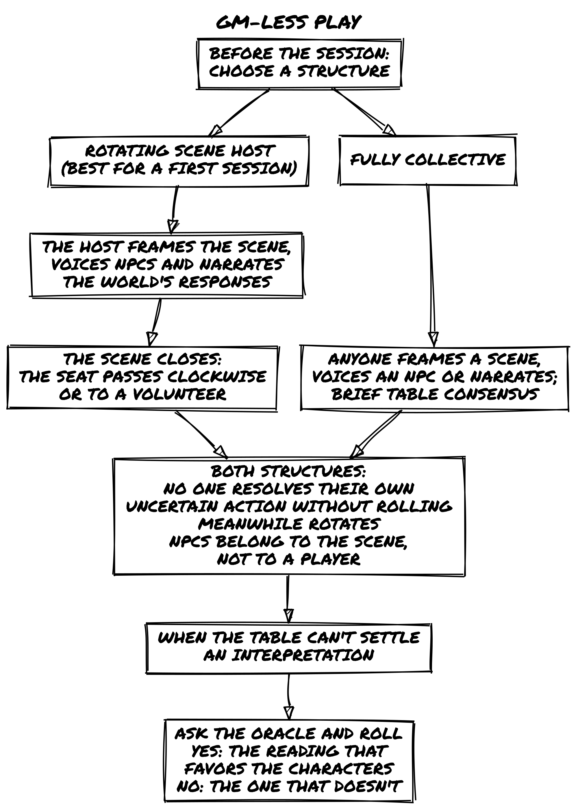
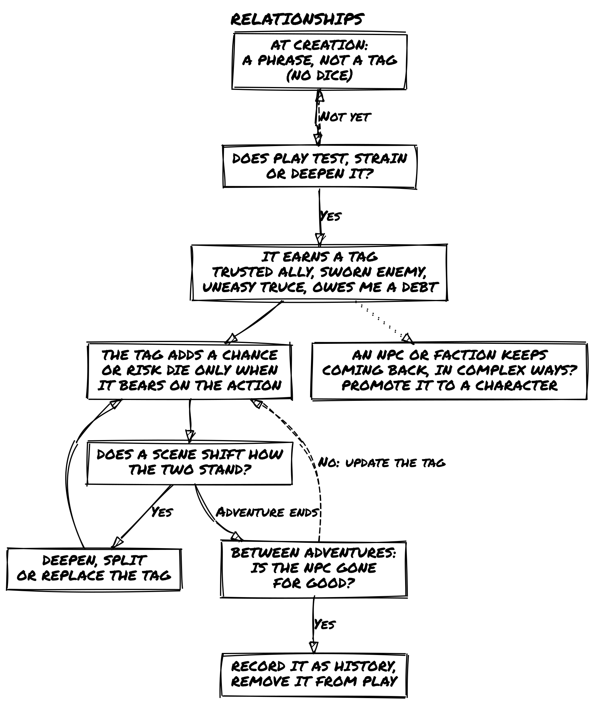
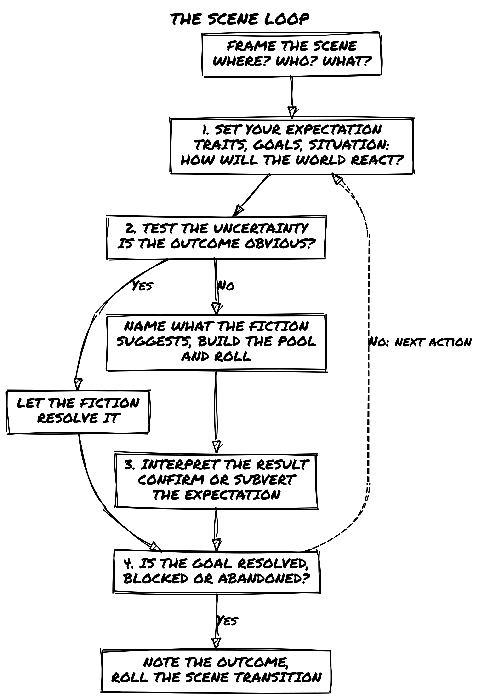
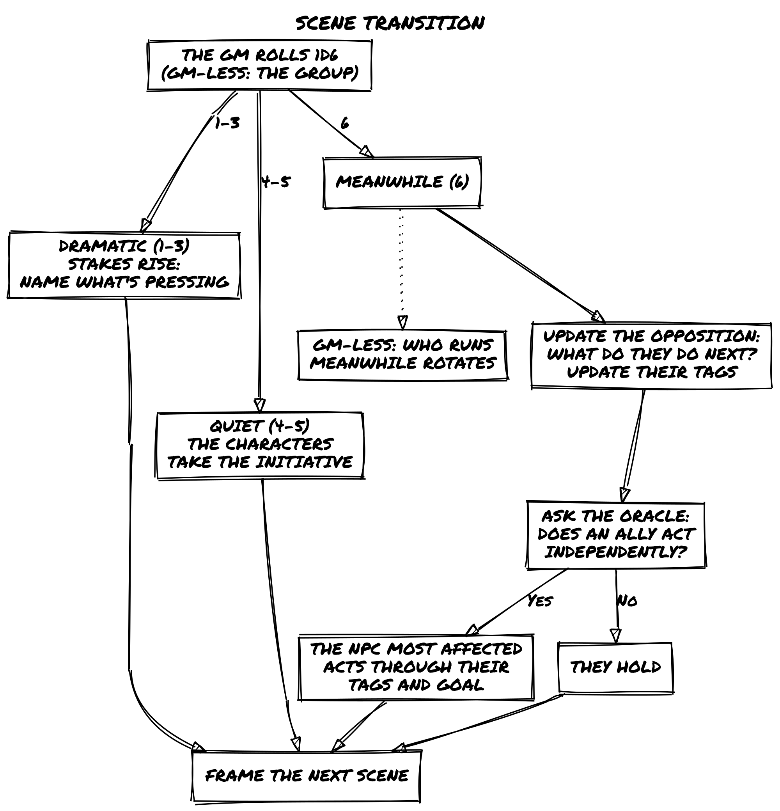
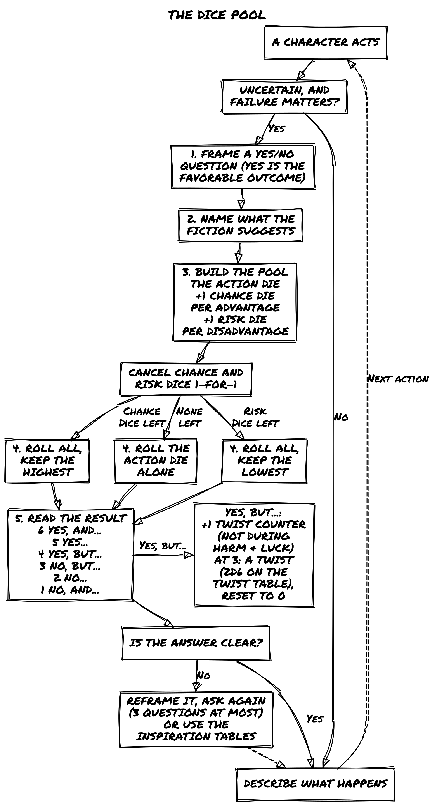
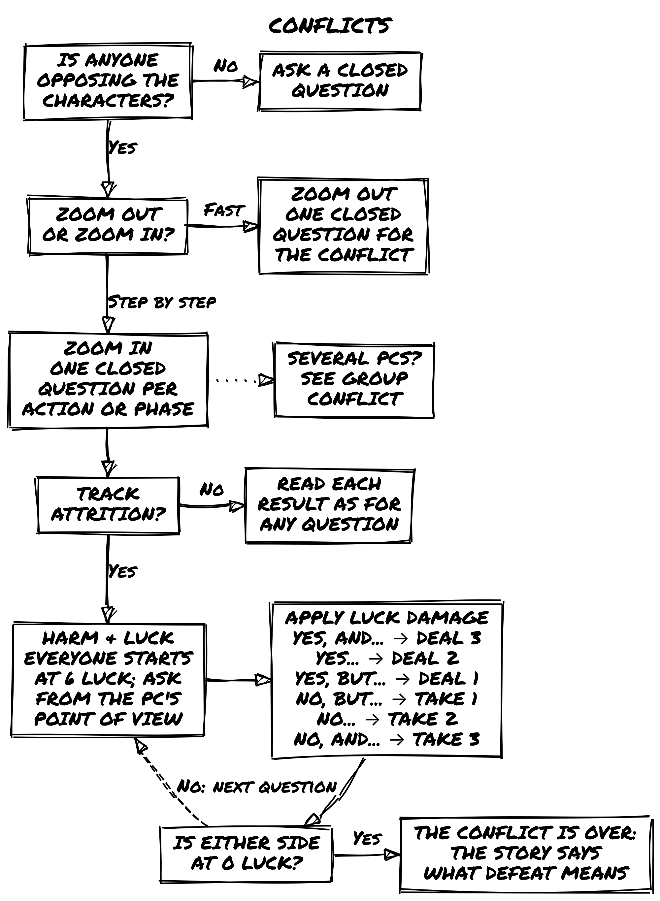
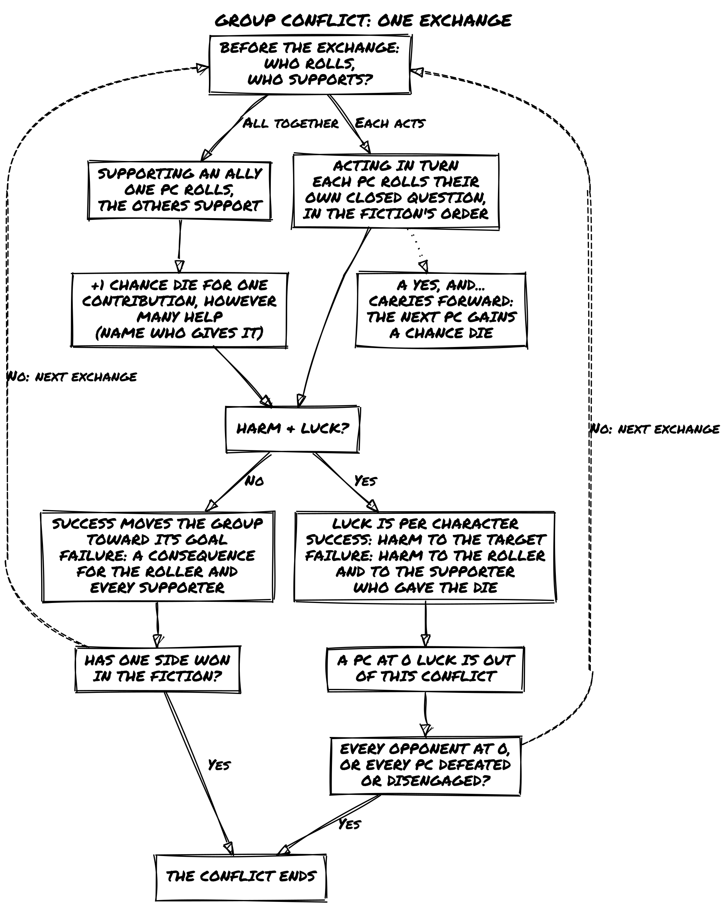
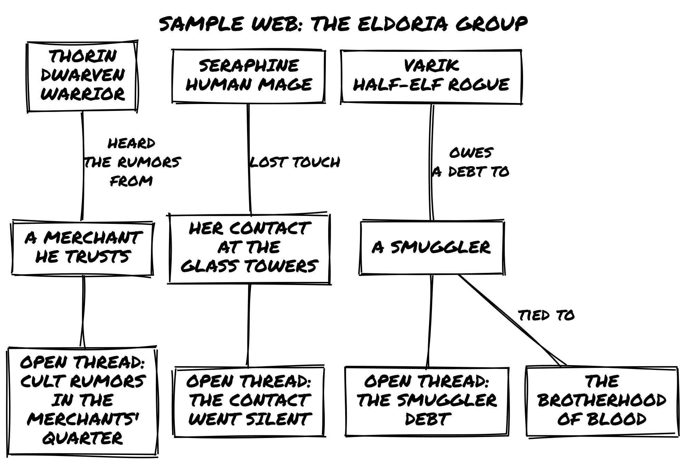

Ensemble 2e
Fiction Engine RPG
Introduction
Ensemble and Loner are built on the same foundation: the same Oracle, the same Tags, the same six outcomes. Ensemble brings that foundation to the table for two or more players. You play characters in a fictional world, decide what they do, and discover what happens together. The story emerges from your choices, your dice, and the consequences that follow.
The game is built on one core principle: fiction precedes mechanics. You describe what your character does. The world reacts. Dice come in only when the outcome is uncertain or dangerous. Everything else is conversation. That makes Ensemble a fiction engine: every rule exists to move the fiction forward. If a rule isn’t doing that, it isn’t here.
Built on Freeform Universal (FU) by Nathan Russell, it reworks and expands FU’s concepts while staying true to its minimalist, flexible spirit.
Ensemble follows four design principles:
- Portable. All you need is a handful of six-sided dice and something to write with.
- Rules-Light. One core mechanic covers almost everything. You can learn it in minutes.
- Tag-Based. Characters, places, and things are described in words, not numbers.
- Emergent. No pre-written plot. Every session generates its own story.
How Ensemble Is Different
Most lightweight RPGs give you either a GM-heavy structure or a fully procedural oracle. Ensemble sits between them. In Classic mode, a GM shapes the world and drives the fiction. In GM-less mode, the group shares that responsibility and the Oracle fills the gaps. Either way, the same dice pool and Tag system handles everything.
Ensemble and Loner share Chance and Risk dice, Tags, and the same six-outcome resolution table. The main difference is the dice pool procedure. See the callout below.
For Loner Players: The Dice Pool
Ensemble and Loner share the same six outcomes, from Yes, and… to No, and…, but reach them differently. In Loner, you roll one Chance Die and one Risk Die and compare them. In Ensemble, you build a pool: one Action Die plus Chance Dice (advantages) and Risk Dice (disadvantages). Cancel them 1-for-1, then roll the pool and keep the highest result if Chance dice remain, or the lowest if Risk dice remain. The outcomes map identically. The feel is different: Ensemble’s pool makes advantage and disadvantage physically present on the table. Unlike Loner, Ensemble does not cap the pool at two dice of each type: pool size is limited by honest fictional justification. You can use Loner Adventure Packs and characters with a few adjustments, listed below.
Using Loner Adventure Packs and Characters
Loner Adventure Packs, NPCs, and character sheets carry over with these adjustments: - Dice: Replace Loner’s Chance Die + Risk Die comparison with Ensemble’s dice pool. Tags marked as advantages become Chance Dice; disadvantages become Risk Dice. - Twist Counter: The counter and its threshold of 3 carry over, but use Ensemble’s trigger: every Yes, but… result adds 1, not just doubles. - Harm & Luck: Works as in Loner. Every character, PC or NPC, starts each conflict at 6 Luck.
Oracle tables, setting material, Tags, and character traits require no changes.
Principles of Play
- Fiction precedes mechanics. Stay in the fiction before reaching for dice. The fiction triggers the roll, not the other way around.
- The setting determines what’s possible. The world suggests and limits what characters can do. A jungle ruin implies danger as surely as any written rule.
- Roll only when outcomes are uncertain and failure matters. You can try anything that fits the fiction. When the outcome is in doubt, dice resolve it.
- Play honestly. Trust each other. There’s no need to police moves or fudge results.
- The game is conversation. Listen and build on what others introduce. Pull their contributions into the scene.
- Play to discover what happens. Enter without a fixed script. No one, not even the GM, knows how it ends.
Game Materials
- Six-sided dice (d6): A handful in three colors. One color is the Action Die (one per player). The others serve as Chance Dice (advantages) and Risk Dice (disadvantages). Ideally each player has one Action Die, six Chance Dice, and six Risk Dice.
- Character sheets, writing materials, and index cards or sticky notes for tracking Tags.
That’s it. No special components, no rulebook to memorize between sessions.
Modes of Play
- Classic: One player is the Game Master (GM), managing the world and all NPCs. The others each play a character. This is the default mode for all examples in this book.
- GM-less: No GM. Players share narrative authority and use the Oracle to drive the story.
- Solo: For solo play, see Loner, a separate standalone game built on the same foundation as Ensemble. No purchase of either is required to play the other.
Roles
Players
- Decide what your character says and does.
- Give them a distinct personality.
- Ask questions to explore the world.
- Collaborate. Don’t use “it’s what my character would do” to wreck the fun.
- Listen and build on others’ ideas.
Game Master
The GM is a player with additional responsibilities:
- Portray the setting and all NPCs.
- Present interesting challenges and obstacles.
- Clearly describe risks and potential consequences before characters act.
- Ensure everyone understands the scene and has a chance to contribute.
- Be a fan of the characters: play to see them do remarkable things, not to defeat them.
- Listen and build player contributions into the fiction.
Safety Tools
Some themes can be intense or emotionally heavy. If a scene makes you uncomfortable, say so. Rewind, reframe, or skip. The game is a tool for stories you want to tell. Nothing here requires anyone to push through something that doesn’t feel right.
Before play begins, use CATS (Concept, Aim, Tone, Subject Matter) to align everyone’s expectations. During play, use Script Change to manage content in the moment.
GM-less Play
In GM-less mode, no single player holds the GM role. Narrative authority is shared: the group collectively frames scenes, voices NPCs, and interprets Oracle results. Two structures work equally well. Choose one before the session begins.
Rotating scene host. One player takes the host seat for each scene. They frame the scene (Where, Who, What), voice NPCs, and narrate the world’s responses to Oracle results. After the scene closes, the seat passes to the next player, clockwise, or whoever volunteers. The host interprets Oracle results for the world; each player interprets results for their own character’s actions.
Fully collective. No designated host. Any player can frame a scene, voice an NPC, or narrate the world’s response. Decisions are made by brief table consensus. If consensus breaks down on an interpretation, ask the Oracle: “Does the more favorable reading hold?” Roll and read normally.
Both structures follow the same rules:
- No player resolves their own character’s uncertain action without rolling. The Oracle’s role doesn’t change.
- Meanwhile rotates. The player who updates the opposition and asks the ally question changes each time Meanwhile triggers.
- NPCs belong to the scene, not a player. An NPC established in one scene can be voiced by anyone in the next.
- Disputes go to the Oracle. If an interpretation can’t be settled by brief consensus, ask a closed question and roll. Yes = the interpretation that favors the characters. No = the one that doesn’t.

Playing the Game
Key Concepts
Fictional Positioning
Fictional positioning is the set of circumstances defining your character’s situation: where they are, what they have, who they know, what they’ve done. It determines what’s possible. If you’ve tripped a troll and stand ready to strike, that advantage comes from positioning. If you’re at a cliff with no rope, that limitation does too.
In practice: always keep in mind where characters are, what they’re doing, and how the environment, objects, and other characters interact with them. The fiction is always the first question.
Everything is a Character
PCs, NPCs, antagonists, creatures, organizations, vehicles, artifacts: all are defined the same way, with Tags. A cursed sword has traits and a history just like a person does. This keeps the system consistent and makes every element in the world a potential source of fictional change.
Not everything needs a full character sheet. A simple rule of thumb:
- If it matters once, keep it as plain tags.
- If it keeps showing up or pushes back against the characters, promote it to a character and play it by the same rules.
A safehouse can be three tags: Hidden Entrance, Reinforced Door, Nosy Neighbors. If that safehouse becomes the campaign’s recurring HQ that keeps getting threatened, give it a sheet. The same logic applies to factions, vehicles, and cursed locations: they start as tags and graduate to characters when the fiction demands it.
Example Campaign
The examples throughout this book use the following setting and characters. When you see Fred, Luke, Mark, Sophia, Matt, and Claire at the table, this is who they are.
Setting: Eldoria
Eldoria is a vast fantasy realm where ancient magic and epic adventure are commonplace. High mountains hide dragons, impenetrable forests house elves, and deep caverns guard forgotten secrets. Independent city-states, warring kingdoms, and unexplored wildlands offer endless opportunities for adventure.
Magic permeates Eldoria, shaping its history, society, and politics. Mages hold power but also face suspicion. Ancient artifacts wait to be discovered, and secret cults seek to revive forgotten deities. Beyond the cities lie the Wildlands: zones of danger and wonder, the final frontier for those seeking to prove their worth.
Players and Characters
Luke plays Lirael, the Elven Archer. A wood elf with a light step and unerring eye, seeking adventure beyond her native forest.
Mark plays Thorin, the Dwarven Warrior. Descendant of a warrior line, wielding axe and shield in search of honor and redemption.
Sophia plays Seraphine, the Human Mage. A promising mage seeking arcane secrets and forgotten artifacts.
Matt plays Varik, the Half-Elf Rogue. Charisma and shadow skills in equal measure, seeking redemption for past sins.
Claire plays Aelwyn, the Druidic Healer. A pure-hearted druid sworn to protect Eldoria, using healing arts and natural magic.
Fred is the Game Master. He guides the group through the wonders and dangers of Eldoria.
Choose a Setting
Before you create characters, agree on the world you’ll play in. This can be a setting from a favorite book, film, or game; a genre you all want to explore; or something built from the Adventure Maker tables at the back of this book.
You don’t need a detailed world bible. A few evocative words that capture the tone, the stakes, and the rough shape of the world are enough to get started. “Political intrigue in a dying empire,” “dungeon crawl in a cursed mountain,” “heist in a city of floating islands”: any of these gives you enough to begin.
Agree on two or three things that are true about the setting: what’s common, what’s rare, what kind of trouble characters typically find themselves in. Then build characters for that world and let the rest emerge from play.
📌 Example: Setting Agreement
Before the Eldoria campaign, the group agrees: magic is common but politically dangerous; the Wildlands are worth exploring but deadly; characters will be working outside established power structures. That’s enough. Everything else comes out during the sessions.
How to Play
Characters
A character is defined by Tags. These traits make them unique and provide advantages or disadvantages during play.
Creating a Character
Concept: A phrase capturing who your character is. “Desert Explorer,” “Gentleman Rogue,” “Retired Space Smuggler.”
- Too broad: Strong Fighter, Heroic Person. They don’t suggest what the character actually does.
- Specific: Cunning Bounty Hunter, Haunted Scholar. Each implies a method, a burden, a way of moving through the world.
Skills (2): Specific talents or abilities that grant narrative permission: they tell you what the character can actually do.
- Too vague: Stealthy, Smart. They don’t change what happens in play.
- Specific: Shadow Walker, Tactician’s Mind. They show how the character moves through the world.
Frailty (1): A weakness, vulnerability, or complication. “Greedy,” “Hard of Hearing,” “Wanted by the Law.” When a Frailty bears directly on the situation, it adds a Risk Die to the pool. Like all Tags, context determines relevance: the same Frailty that hinders in one scene may help in another.
Motive: What drives them, an instinct, belief, or attitude. “Always defend the weak.” “Knowledge is power.”
Goal: A medium or long-term aspiration. “Redeem my family’s honor.” “Find the lost artifact.”
Relationships: Write a short phrase for each tie to another PC or an NPC: “Thorin once saved my life.” “I run errands for the Merchant Guild.” These phrases are not tags yet: they say who matters to the character and add no dice. A relationship earns its tag in play. See Relationships below.
Gear: Distinctive equipment. Items intrinsic to the concept plus two additional pieces. Only noteworthy items need listing; characters are assumed to carry standard gear for their role. Specialist gear can add Chance Dice when relevant.
Keep the sheet lean. The sheet captures who this character is in any scene you’re likely to play, not everything they’re documented as being able to do. Two well-chosen Skills do more work than five overlapping ones. Ask: which tags make this character specific in the next scene? If a tag never bears on the situation, it wasn’t earning its place. Tags evolve through play; the sheet describes who the character is now, not the legend they might become.
Let Goal and Motive emerge from play. The best Goals and Motives aren’t chosen from a list before the first scene; they come from the fiction itself. A Goal that forms in response to the opening situation has stakes that a pre-written one rarely carries. A Motive that connects to something that actually happened at the table has weight. If you start without them, that’s fine: frame the opening scene, see what the fiction makes true about these characters, and write down what emerges. The table usually knows within the first two scenes.
📌 Example: Lirael
- Concept: Wood Elf Archer
- Skills: Bow Mastery, Silent Movement
- Frailty: Bond with the Forest (weakens far from wooded areas)
- Goal: Protect the ancient forests of Eldoria
- Motive: Deep love for nature and wild places
- Relationships: Ally of Forest Ents, Enemy of Treasure Hunters
- Gear: Enchanted Longbow, Cloak of Leaves
Growth
Characters don’t advance by leveling up. They grow by living through the story. Growth follows three principles:
- Your character becomes more complex, not simply stronger.
- Every change connects to something that happened in play.
- Growth can happen at any moment, not just between sessions.
In practice, this means Tags evolve. New traits appear, existing ones shift, frailties deepen, relationships change. This approach is sometimes called organic growth: character development that emerges from the fiction rather than from accumulated experience points. Growth is reflected directly in the character sheet as play proceeds. See also Post-Game Character Growth in the Between Adventures chapter.
📌 Example: Organic Growth
After leading resistance against an illegal logging operation, Lirael gains the trait Environmental Leadership and her Bow Mastery evolves into Guerrilla Strategist, reflecting new tactics learned in the field. Her Bond with the Forest frailty deepens: she now feels physically weak in urban environments.
Converting a Background
If you already have a written background, extract the relevant Tags:
Once, in the shadows of Gilden, lived a thief named Eryk, known as “Veiled Shadow.” A decade of thefts gave him an enviable reputation: he could disappear in a breath, and no lock resisted his touch. An old leg injury slowed him, a reminder of a trap barely escaped. He stole only from those who could afford to lose. His goal: enough wealth to retire where no enemy could find him.
Eryk’s Tags:
- Concept: Veiled Shadow, veteran thief and master of disappearance.
- Skills: Master of Shadows, Locksmith Artisan
- Frailty: Limp, an old leg wound, a constant reminder of risk.
- Motive: Steal from the rich to build a better life.
- Goal: Gather enough wealth to retire safely.
- Relationships: Theft Partner (PC), Old Enemy: a guard sworn to capture him (NPC).
- Gear: Lork’s Lockpicks, Shadow Cloak.
Creating NPCs
NPCs follow the same tag logic as PCs. Build only what the scene needs:
- Walk-on NPCs (one appearance, minor obstacle): a Concept tag and one relevant Skill. No sheet needed.
- Named NPCs (recurring, have agendas): Concept, one or two Skills, one Frailty. Add a current goal-tag and put them on the running list.
- Factions and organizations (take actions, have Luck): Concept, one or two Skills, one Frailty. Treat them as full characters when they start pushing back.
Every NPC starts a Harm & Luck conflict at 6 Luck, like the PCs, and Luck resets when the conflict ends. Show how dangerous an opponent is through its tags: a major antagonist brings Skills that apply to almost every exchange, a minor threat brings few. A minor threat often needs no Harm & Luck conflict at all: Zoom Out and resolve it with one question. Lasting consequences land as tags, not reduced Luck.
Relationships
Tags describe what a character is. They also describe what a relationship has become.
When a connection with another PC or an NPC has been tested, strained, or deepened through play, that relationship earns a tag. Trusted Ally, Sworn Enemy, Uneasy Truce, Owes Me a Debt. These tags function like any other: when they bear directly on the situation, they add a Chance Die or Risk Die to the pool.
At creation, relationships are phrases, not tags. A relationship earns its first tag the first time play tests, strains, or deepens it. From then on it grows like any other tag: any scene that shifts how two characters stand toward each other (a shared risk, a moment of trust, a betrayal, a quiet exchange that changes everything) can deepen, split, or replace it.
PC-to-PC relationships work the same way. If Thorin saved Varik’s life in session two and they’ve been tight ever since, Owes Thorin His Life is a real tag that could grant Varik a Chance Die when acting on Thorin’s behalf, and could impose a Risk Die when acting against his interests.
📌 Example: Earning a Relationship Tag
The group has been working with Sir Elric of Eldorhaven, a conflicted knight, for three sessions. In the fourth session, Elric shares information that puts him at serious personal risk to help them. Lirael’s player notes the relationship: she assigns the tag Tested Alliance, Cautiously Trusted to the bond between Lirael and Elric. From now on, when a scene involves asking Elric for help or information, that tag is in play.
When to Promote a Tag to a Character
Relationship tags and recurring NPCs can start as plain tags and graduate when the fiction demands it, by the rule of thumb in Everything is a Character.
An NPC who appears in two scenes as a tagged name (Crooked Merchant) becomes a full character when the group starts interacting with them in complex ways. A faction that was a tag on the world (Brotherhood of Blood) becomes a character when it starts taking actions that need a Concept, Skills, and Luck.

Before Play
You don’t need hours of prep. A few notes before the first scene make everything more grounded.
Build a web of connections. The NPCs named in your characters’ relationship phrases already exist: note each one with a name and a few words on who they are. They’ll show up.
Note important locations. Places that might be revisited: a guild hall, a ruin the group is heading toward, a city they left behind with unfinished business.
Track open threads. Loose ends that haven’t resolved yet: a rumor that went nowhere, a contact who didn’t show, a debt that hasn’t been collected. A name and two words is enough.
These notes are starting points. As play develops, NPCs will change, locations will be marked by what happened there, and open threads will pull the story forward in unexpected directions.
Scenes
A scene is a segment of play defined by a situation, place, or set of characters: a beat where something moves, something is revealed, or a character is seen more clearly.
Framing a Scene
Before the first dice are rolled, establish the scene’s conditions. Answer three questions in plain terms:
- Where are the characters, and what does that place feel like right now?
- Who is present, or likely to become present?
- What do the characters intend to do here?
You don’t need to roll for any of this. Use what the fiction has established: the previous scene’s outcome, updated NPC tags, the transition that brought you here. If something is uncertain, ask the Oracle one framing question before the scene begins. A framing question must be about a fictional condition (what is already true about the situation), not about what will happen. “Is the building still guarded?” is a framing question. “Do we get inside?” is not; that belongs in the scene itself.
Once you can answer all three, the scene is open. Start playing.
📌 Example: Framing a Scene
The group’s last scene ended with them fleeing the city gates on horseback, one step ahead of the city guard. Before anyone rolls, Fred frames the next scene:
- Where: A dense pine forest, an hour’s ride from the city. Cold, quiet, branches blocking the moon. The horses are winded.
- Who: The five characters, no immediate pursuit visible, but tracks in the mud show recent activity.
- What: Find shelter before dawn and assess whether they’re still being followed.
All three conditions are set. The scene is open.
The Scene Loop

Every scene follows a natural rhythm:
- Set your expectation. What do the characters want to achieve in this scene? Look at their traits, goals, and the situation to determine what makes sense. How do you expect the world to react?
- Test the uncertainty. If an outcome isn’t obvious (or if overconfidence might tempt fate), resolve it with a closed question. Name what the fiction suggests before building the pool (see The Dice Pool Procedure). Use Tags to determine whether someone has a Chance Die or Risk Die advantage.
- Interpret the result. The dice confirm or subvert your expectations. How does this outcome reshape the scene? What new possibilities emerge?
- Close and transition. When the scene ends, note the outcome and roll the Scene Transition to establish what comes next.
At first, you may want to follow this structure deliberately. With practice, it becomes second nature.
Types of Scenes
Descriptive scenes set atmosphere, reveal information, or explore character without requiring dice. A journey, a rest, a flashback, a conversation that reveals backstory.
Fred: The dusty road winds through the valley, flanked by barley fields. In the distance, Kingshaven’s towers are wrapped in morning mist. Along the path, a temporary market buzzes with merchants selling small magical artifacts. An old man in rags staggers into the square, waving a worn map and shouting about a “curse looming over the city” before collapsing. What do you do?
Action scenes involve specific challenges requiring decisions and, often, dice. Combat, tense negotiations, heists, chases.
These two labels describe a scene’s texture. The Scene Transition’s Dramatic, Quiet, and Meanwhile types (described later in this chapter) describe its register: who holds the initiative. The taxonomies overlap without mapping exactly: a Quiet Scene is often descriptive, a Dramatic Scene is usually an action scene, and a Meanwhile can be either.
Fred: Twilight envelops the Moonwood. Brigands block the path. Lirael, the fading light heightens your senses. What do you do?
Luke (Lirael): I use the twilight and my Silent Movement to find an elevated position for a surprise shot.
Mark (Thorin): I advance directly, drawing their attention away from the others.
Sophia (Seraphine): While Thorin holds them, I cast a confusion spell on the brigands behind him.
Matt (Varik): I slip behind their lines to inspect their cart.
Asking Questions
Players ask questions to clarify the scene or introduce new elements. This is how the world gets built at the table.
Luke (Lirael): Is there any sign of how long the brigands have been here?
Fred: The tracks are fresh. This camp was used recently.
Mark (Thorin): Documents? Symbols? Anything indicating who sent them?
Fred: A partially burned document with a seal. It looks like it belongs to a local noble.
When to Roll
Not every action needs dice. Roll when:
- The outcome is uncertain: it could go either way given the fiction.
- Failure has consequence: it shifts circumstances, not just causes a minor inconvenience.
- A surprise would be welcome: even when you’re fairly confident, sometimes the dice reveal what you didn’t plan.
Don’t roll when the outcome is obvious: if Varik has Expert Lockpicking and the lock is a simple padlock, he opens it. If Seraphine casts a light spell in a dark corridor with no opposition present, the corridor is lit. Let the fiction do its work before you reach for dice.
📌 Example: No Roll Needed
Lirael knows from two sessions of reconnaissance that the castle courtyard is empty at midnight. The GM agrees: she enters undetected without a roll, because the fiction supports it clearly.
📌 Example: Roll Called For
Varik tries to pick a lock while a patrol walks past twenty feet away. The outcome is uncertain and the consequences matter (getting caught would be significant). He rolls.
The First Scene
Start in the action. An in-medias-res opening, a conflict, a crisis, a mystery already in motion, reveals character through pressure.
The GM can use the 5W+H method to assemble a mission premise before dropping into the action. Roll once on each column, or pick entries that fit the tone you want. The six answers give you the bones of a situation: Who is driving it, What needs to happen, When it needs to happen, Where (or what) the target is, Why the characters care, and How they get drawn in. Combine them, let them contradict each other, and open the first scene in the middle of it.
5W+H Mission Premise
| D6 | Who? | What? | When? | Where? | Why? | How? |
|---|---|---|---|---|---|---|
| 1 | Authority | Rescue | Tonight | Person | Aid | Chance encounter |
| 2 | Organization | Protection | Within days | Group | Fortune | Old connection |
| 3 | Ally | Exploitation | At a planned event | Treasure | Coercion | Rumor or message |
| 4 | Mentor | Exploration | Before it closes | Location | Impulse | Capture or threat |
| 5 | Help-seeker | Escape | After a change | McGuffin | Ambition | Mishap |
| 6 | Blackmailer | Pursuit | Right now | Confession | Revenge | Object delivered |
You can frame the mission first, then drop into the middle of it going wrong:
Fred: Night wraps Vaelora. The central square swarms with screaming goblins. A building burns. Lirael, you’re on the rooftops, just out of a duel. Thorin, Seraphine, Varik, Aelwyn: you’re surrounded in the square, backs to the monument. What do you do?
Closing a Scene
A scene ends when one of the following is true:
- The characters’ immediate goal has been resolved: achieved or definitively failed.
- The goal has been blocked: circumstances have made it impossible to pursue further in this scene.
- The characters abandon the goal and commit to a different course of action.
When any of these conditions is met, stop asking Oracle questions. Note the outcome, then move to the next scene.
If none of the three conditions feel clearly met, ask: “Has this scene run its course?” A Yes of any kind closes it. A No means there’s still something worth pursuing here. Use this as a last resort, not a routine check.
📌 Example: Closing a Scene
The group is interrogating a merchant about a shipment of stolen artifacts. After three questions, the merchant refuses further cooperation and his bodyguards appear at the door. The goal of extracting information is blocked. The scene closes. Note what you learned and open the next scene.
Scene Transition
At the end of a scene, the GM (or in GM-less mode, the group) rolls 1d6 to establish the shape of what comes next.
Scene Transition
| D6 | Scene Type | What It Means |
|---|---|---|
| 1-3 | Dramatic Scene | Stakes rise. New obstacles, dangers, or complications arrive. |
| 4-5 | Quiet Scene | Pressure lifts briefly. Characters take the initiative. |
| 6 | Meanwhile | The world acts while the characters are offstage. |
Dramatic Scene (1-3): Something external has moved. A threat has advanced, a complication has surfaced, a plan has begun to unravel. The characters are responding, not initiating. Name what’s pressing before the scene opens.
Quiet Scene (4-5): The characters have the initiative. Rest and recover, plan and prepare, gather information, deepen a relationship. The Oracle is still consulted, but the questions are about things the characters initiate, not crises landing on them. When pressure enters a Quiet Scene and the fiction tips toward urgency, that moment is a turning point: the scene’s register has shifted. Close the scene there and open a Dramatic Scene from that point.
Meanwhile (6): The world doesn’t pause. Follow both steps:
Update the opposition. Cut to whoever holds power over the situation: the antagonist, a rival, a faction. Ask what they do next. Update their tags to reflect their action. If they were Planning the Attack, they are now Ready to Strike. These updated tags are in play the moment the story returns to the characters.
Ask the Oracle: “Does an ally act independently?” On a Yes of any kind, pick the NPC most affected by recent events and interpret their action through their current tags and goal. On a No, they hold.
📌 Example: Meanwhile
The group has just exposed a corrupt city official and scattered into the streets. Fred rolls a 6: Meanwhile. He cuts to Lord Varron Darkwill, currently tagged Searching for the Source of the Leak. Varron makes a move: the tag updates to Has Identified the Party. Fred then asks the Oracle: “Does an ally act independently?” Yes, but: Seraphine’s contact at the mage guild has started moving to warn her, but is being followed. The characters don’t know any of this yet. When the next scene opens, the world is already ahead of them.

Resolving Actions
When an action’s outcome is uncertain or dangerous, resolve it with a closed question.
The Dice Pool Procedure
1. Frame the question. State what the character is trying to do as a Yes/No question. Always phrase it so Yes is the favorable outcome.
“Do I steal the amulet without being noticed?” Not: “Does the goblin catch me stealing?”
2. Name what the fiction suggests. Before any dice are picked up, say what the current situation implies. Not a prediction, just a shared read of the fiction. “This looks like a Yes to me.” “I’d expect a No here.” If the table disagrees, settle it in one sentence, then move on. This step keeps the roll honest: it makes the fiction’s weight visible before Tags and dice have their say.
3. Build the dice pool.
- Start with the Action Die (always rolled).
- Add one Chance Die for each Tag providing an advantage.
- Add one Risk Die for each Tag creating a disadvantage.
- Chance and Risk Dice cancel each other out 1-for-1. You never roll both types together.
Each relevant advantage Tag adds one Chance Die; each relevant disadvantage Tag adds one Risk Die. Tags are not numbers: ask whether the situation gives an edge or imposes a challenge before adding a die. When you’re not sure whether a Tag applies, ask whether it changes what the character can do in this moment. If yes, it’s in the pool. If you have more than two or three Tags on one side, ask whether they represent distinct advantages, not variations of the same thing.
4. Roll.
- Chance Dice remaining: roll them with the Action Die, keep the highest.
- Risk Dice remaining: roll them with the Action Die, keep the lowest.
- Only the Action Die: roll it alone.
5. Read the result.
Oracle Results
| D6 | Result | What happens |
|---|---|---|
| 6 | Yes, and… | You get what you want, and something more. |
| 5 | Yes… | You get what you want. |
| 4 | Yes, but… | You get what you want, at a cost. |
| 3 | No, but… | You don’t get what you want, but not all is lost. |
| 2 | No… | You don’t get what you want. |
| 1 | No, and… | You don’t get what you want, and things get worse. |
Yes and No determine success or failure. And and But add fictional detail: new Conditions, changed Details, shifted relationships. They are where the story turns.
📌 Example: Stealing the Amulet
Fred: The goblin boss is distracted. Varik, do you try to steal his amulet?
Matt (Varik): Yes. “Do I steal the amulet without him noticing?”
Fred: The boss is distracted but this is still risky. I’d call it a Yes, but… situation.
Matt: My Shadow Skills give me a Chance Die.
Fred: The boss is Extremely Vigilant: that’s a Risk Die. They cancel. Roll your Action Die alone.
Matt: I got a 4.
Fred: Yes, but: you have the amulet, but another goblin spots you and screams. You’re now the main target. What do you do?

Automatic Success
Not every action needs dice. When positive factors clearly outweigh the risks: the character is competent, prepared, and the obstacle is minor. Let it succeed.
Fred: The lock is rusty and fragile. Varik, with your Masterwork Lockpicks and Expert Theft, you pick it easily. The gate swings open.
Splitting Complex Tasks
When a task is too large for a single roll, break it into steps. Each step is its own closed question with its own consequences.
Fred: Infiltrating the Dark Lord’s fortress won’t be one roll. Start with getting past the outer guards.
Luke (Lirael): I use Silent Movement to approach unseen. (Rolls Yes.)
Fred: You’re in. Now the magic sensors.
Sophia (Seraphine): I use my Crystal Staff to deactivate them. (Rolls Yes, and…)
Fred: The sensors go dark and stay dark. You’ve bought the group time to scale the wall.
Alternative Question Framing
Instead of “Do I succeed?” try “How well do I do?”:
How Well Do I Do?
| D6 | Result | Interpretation |
|---|---|---|
| 6 | Exceptionally | Beyond expectations. |
| 5 | Very well | Clear success, great skill shown. |
| 4 | Well, but… | Success with a complication. |
| 3 | Barely | Marginal success, some consequences. |
| 2 | Insufficiently | Failure. |
| 1 | Total failure | Failure, and the situation worsens. |
Interpreting Results
The Oracle gives you a result. Your interpretation makes it specific. There’s no single right way to read the answer: use whichever approach fits the moment.
As Intensity: Treat the result as a measure of how well or poorly things go.
Results as Intensity
| Result | Intensity |
|---|---|
| Yes, and… | Major success: overwhelming advantage, unexpected bonus. |
| Yes… | Moderate success: things go as expected. |
| Yes, but… | Success with consequences: partial victory, unintended complication. |
| No, but… | Failure with compensation: misses the goal, but something useful happens. |
| No… | Moderate failure: things go wrong as expected. |
| No, and… | Major failure: catastrophic mistake, unexpected setback. |
As a Twist Generator: Let the result introduce a new element that wasn’t part of your initial expectations. A Yes, but… might mean the thing you wanted is in place, but something that wasn’t there before now is too. A No, but… might mean the door is locked, but you’ve discovered there’s another entrance.
As Momentum Control: Read the result as raising, lowering, or holding the scene’s tension.
Results as Momentum
| Result | Momentum |
|---|---|
| Yes, and… | Drives the scene forward with a major development. |
| Yes… | Moves the story in a predictable direction. |
| Yes, but… | Adds a complication that slows progress. |
| No, but… | Shifts the focus to an alternative path. |
| No… | Brings the scene to a roadblock. |
| No, and… | Escalates the stakes significantly. |
📌 Example: Three Readings of the Same Roll
Seraphine tries to decipher an inscription on the temple door. The result is No, but…
- As Intensity: She fails to fully translate it, but she gets enough to understand the general shape of the warning inside.
- As a Twist: She fails, but the attempt triggers a faint glow: someone has been here recently and activated this same inscription.
- As Momentum: She fails, but the scene doesn’t end. The partial translation gives the group a new angle to try.
The three readings are lenses, not alternatives; a given result usually makes one loudly obvious. The one to be wary of: defaulting to Twist Generator because introducing something new feels creative. If the scene already has active tags, open threads, and unresolved complications, a new element adds noise rather than story. Scan the existing fiction first. Reach for Twist Generator when the scene is thin.
When the Result Is Unclear
Sometimes the Oracle’s answer won’t make immediate sense. Instead of getting stuck, follow these steps:
- Don’t overquestion it. Avoid asking too many follow-ups to force a “logical” result. Three Yes/No questions on the same beat is usually enough. If you’re still unsure, move on.
- Reframe the answer. Think about the broader situation. Could this result introduce a hidden complication or suggest a deeper truth?
- Use an open-ended question. If you’re still lost, roll on the inspiration tables below, or ask: “What unexpected factor is at play?” or “What does this reveal that I didn’t consider?”
- Default to Yes, but… If nothing else fits, treat the response as Yes, but… and introduce a minor complication that makes the answer work.
📌 Example: Reframing an Unexpected Answer
The group asks: “Is the underground passage still passable?” The Oracle answers No, and… It doesn’t make immediate sense: they were just here last week. Possible reframes: Maybe a cave-in happened. Maybe someone sealed it deliberately. Maybe No, and… means the passage is gone and something is now guarding the collapsed entrance. Final interpretation: The passage is blocked by a deliberate rockfall, and torchlight from the far side suggests someone is already on the other side. The story moves forward with a new layer of mystery.
When the Oracle keeps returning No results in sequence, resist treating each one in isolation. A string of failures is not bad luck; it is a pattern the fiction is making. Something is working against the characters harder than a single obstacle explains. Step back and name what it is: a hostile environment, active opposition, or an approach that simply isn’t working. The third consecutive No doesn’t just mean the door won’t open; it means the situation has shifted. Narrate that shift rather than rolling again.
If the Oracle’s answer is clear but the path forward has closed entirely, see Dead Ends below.
Open-Ended Questions and Inspiration
Not all questions can be answered with a simple Yes or No. Use these tables when:
- The Oracle returns a but… or and… modifier and you can’t see what it means in context.
- A scene opens and you have no clear sense of what’s present or what the mood is.
- You want to expand a vague answer into something concrete.
- The story has stalled and you need a prompt to find the next thread.
Roll 2d6 on each table (Verb, Noun, and optionally Adjective), one die for the row and one for the column, to create a prompt. Read the result back into the existing fiction. The prompt is a lens, not an instruction to invent something new from scratch.
Verbs
| Verbs | 1 | 2 | 3 | 4 | 5 | 6 |
|---|---|---|---|---|---|---|
| 1 | inject | pass | own | divide | bury | borrow |
| 2 | continue | learn | ask | multiply | receive | imagine |
| 3 | develop | behave | replace | damage | collect | turn |
| 4 | share | hand | play | explain | improve | cough |
| 5 | face | expand | found | gather | prefer | belong |
| 6 | trip | want | miss | dry | employ | destroy |
Adjectives
| Adjectives | 1 | 2 | 3 | 4 | 5 | 6 |
|---|---|---|---|---|---|---|
| 1 | frequent | faulty | obscene | scarce | rigid | long-term |
| 2 | ethereal | sophisticated | rightful | knowledgeable | astonishing | ordinary |
| 3 | descriptive | insidious | poor | proud | reflective | amusing |
| 4 | silky | worthless | fixed | loose | willing | cold |
| 5 | quiet | stormy | spooky | delirious | innate | late |
| 6 | magnificent | arrogant | unhealthy | enormous | truculent | charming |
Nouns
| Nouns | 1 | 2 | 3 | 4 | 5 | 6 |
|---|---|---|---|---|---|---|
| 1 | cause | stage | change | verse | thrill | spot |
| 2 | front | event | home | bag | measure | birth |
| 3 | prose | motion | trade | memory | chance | drop |
| 4 | instrument | friend | talk | liquid | fact | price |
| 5 | word | morning | edge | room | system | camp |
| 6 | key | income | use | humor | statement | argument |
📌 Example: Interpreting Random Inspiration
The group asks the Oracle whether a captured soldier knows where the hostage is being held. The Oracle answers Yes, but… and no one can immediately see the complication. A player rolls: destroy + memory. That’s the complication: the soldier knows, but something has damaged or suppressed what he remembers. He was drugged, or the experience was traumatic, or a spell has been placed on him. The story now has a new thread to pull.
Dead Ends
Sometimes a lead goes cold. A contact has vanished, evidence has been destroyed, a location is sealed. This is a dead end: not a failed roll, but a structural collapse in the path forward.
When you recognize a dead end, stop asking questions about the closed path. Instead, reframe.
Ask the Oracle a single question: “Does something or someone point toward a new way forward?”
- On a Yes of any kind, introduce a new element: an overlooked detail, an unexpected contact, an object that suggests a direction. It need not be obvious. It need only exist.
- On a No, but…, the path remains closed, but the characters understand something about why. That understanding may suggest a direction, or it may simply be closure.
- On a No or No, and…, the dead end holds. Shift scale: pull back to the characters’ goal and ask what other approach, person, or location might serve it. Start a new scene from there.
If a second dead end follows on the same thread, don’t ask the reframe question again. Shift scale immediately. Consecutive dead ends mean the approach itself needs to change, not just the path.
A dead end is not failure. It’s the story telling you to look somewhere else.
📌 Example: Dead End
The group has been tracking a corrupt archivist who supposedly has the deed they need. The Oracle’s last answer: he fled the city three days ago. Path closed. They ask: “Does something or someone point toward a new way forward?” Yes, but…: the archivist left behind an apprentice who knows where he went, but the apprentice is in custody at the city watch house.
The group shifts their approach and opens a new scene at the watch house.
Conflict and Consequences
The Twist
A Twist is a development that changes something larger than the current action: the situation, the goal, or who is in play. It doesn’t come from a single bad roll. It accumulates.
The Twist Counter tracks rising tension for the whole table: the group shares a single counter. Each time a roll produces a Yes, but… result, add 1 to the counter. When the counter reaches 3, a Twist occurs: roll 2d6 on the Twist Table below and reset the counter to 0. Roll one die for the Subject column and one die for the Action column; combine the two results into a single beat.
Twist Table
| D6 | Subject | Action |
|---|---|---|
| 1 | A third party | Appears |
| 2 | The characters | Alter the location |
| 3 | An encounter | Helps the characters |
| 4 | A physical event | Hinders the characters |
| 5 | An emotional event | Changes the goal |
| 6 | An object | Ends the scene |
Interpret the two-word result within the context of the current scene.
The Twist Counter is suspended during Harm & Luck conflicts. Resume it when the conflict ends.
Twist Intensity
When a Twist occurs, read the fiction before you roll. If the scene has been building pressure (failed rolls, unresolved complications, characters cornered or out of options), the Twist lands hard. Interpret the result at its most disruptive. If the scene has been relatively clean, the Twist is a shift, not a collapse. The table is the same. The weight isn’t.
📌 Example: Twist Intensity
The group is inside a locked archive, Varik has burned through most of his tools, the alarm has sounded once already, and they’re still two rooms from their target. A roll comes up Yes, but…: Twist Counter hits 3. At this level of accumulated pressure, the Twist is serious. Roll comes up An emotional event / Changes the goal. Interpretation: Seraphine reads a document in transit and discovers the goal they’ve been working toward, recovering the deed, would destroy someone they care about. The goal is now in question.
Compare to a clean scene: the group is calmly researching in the public library. Twist triggers: the same result means something smaller. A messenger arrives with news that changes what they thought they were looking for.
Conflicts
A conflict occurs whenever adversaries oppose each other: in a fight, a debate, a chase, a contest of wills. Use the same closed-question procedure as any other action.
Zoom Out / Zoom In
Choose the resolution scale that fits the moment:
Zoom Out resolves the entire conflict with a single closed question. Fast, keeps pace.
Fred: The orc champion Zargath challenges you to a duel for entry to the temple.
Matt (Varik): I use my agility to disarm him. “Does Varik overcome Zargath?”
(Yes, and…) Varik snatches his weapon and immobilizes him. Impressed, Zargath grants them access.
Zoom In resolves the conflict through a series of closed questions, one per action or phase. Detailed, builds tension step by step.
Fred: Lirael, you’re in a verbal duel with the Black Queen. Every sentence is a weapon.
Luke (Lirael): I focus on the economic costs of her war. “Do I make her consider the expense?” (Yes, but…) She hesitates but isn’t convinced.
Luke: I mention how her allies might see her. “Do I make her worry about losing support?” (Yes.) She looks troubled.
Luke: I propose peace as an advantage. “Do I persuade her?” (Yes, and…) Struck by the argument, the Queen agrees to negotiate.
Harm & Luck (Optional)
For conflicts where you want to track attrition, use Harm & Luck. Each result deals harm: Luck damage to one side, from the table below. This is an optional layer over the Zoom Out / Zoom In methods.
How it works:
- Every character, PC or opponent, starts each conflict at 6 Luck.
- Ask closed questions as normal, always from the PC’s point of view: “Do I land the hit?”, “Do I dodge the blow?” The Oracle never speaks for the opponent: resolve its actions by asking whether the PC avoids or resists them.
- On success, deal harm to the opponent’s Luck. On failure, take harm.
Luck Damage
| Result | Luck Damage |
|---|---|
| Yes, and… | Deal 3 |
| Yes… | Deal 2 |
| Yes, but… | Deal 1 |
| No, but… | Take 1 |
| No… | Take 2 |
| No, and… | Take 3 |
At 0 Luck, the conflict is over. Stop rolling. The story determines what defeat means:
- In combat: captured, knocked out, forced to flee.
- In a chase: cornered or the target is lost.
- In a debate: outmaneuvered, must concede.
- In a heist: alarm triggered, evidence left behind.
Luck is not a health bar. It tracks who holds the upper hand in this conflict, not how close a character is to dying. That’s why it resets fully at the start of every new conflict regardless of what happened in the last one, for PCs and opponents alike.
How hard an opponent is. Luck always starts at 6. An opponent’s danger comes from its tags: the Skills that apply against each action add Risk Dice, and a dangerous opponent turns more results into failures. A minor threat rarely deserves a Harm & Luck conflict: Zoom Out and resolve it with one question.
Account for the size of the table, too. A group that rolls once per PC puts several harm-dealing rolls on a lone opponent every exchange. Against a major antagonist, have the group act together (one PC rolls, the others support; see Group Conflicts below), or give the antagonist a single-entity mob fighting alongside it.
Luck tracks who wins the conflict. Tags track what it cost them.
When a defeat has lasting narrative weight, assign it as a Condition or Trait: Injured, Rattled, Shaken. That tag persists into future scenes and imposes a Risk Die when relevant. A conflict that leaves no tag behind cost nothing. A conflict that leaves a tag behind changed the character.
📌 Example: Harm & Luck
Varik faces a burly bandit in a tavern. Both start at 6 Luck.
Matt (Varik): “Do I get the first strike in?” Shadow Skills (Chance Die) vs. Brawler (Risk Die): they cancel. Action Die only. Rolls 6.
Fred: Yes, and: deal 3 harm. Bandit drops to 3 Luck. The bandit swings back at you.
Matt (Varik): “Do I slip the punch?” Nimble (Chance Die) vs. Tavern Fighter (Risk Die): cancel. Action Die only. Rolls 3.
Fred: No, but: Varik takes 1 harm (down to 5 Luck). The punch connects, but the bandit overextends. The fight continues.
The bandit acts, but the question is always Varik’s: the Oracle never speaks for the opponent.
Multiple Opponents
When the characters face more than one adversary at once, choose the approach that fits the scene:
Treat the opponents as a single entity. Best for mobs, minions, or coordinated groups. Give them a shared Concept and a relevant Skill (Elite Mercenary Squad, Riot Guard Formation), a single Luck pool, and a Frailty related to their numbers. Fast and clean. The opposition becomes an abstract force rather than individual threats.
Fred: The five mercenaries act as a unit with Concept: Tactical Strike Team, Skill: Coordinated Maneuvers, Frailty: Poor Cohesion Under Pressure, Luck: 6. Varik can try to exploit that frailty directly.
Handle opponents as separate entities. Best for named adversaries, small groups with distinct roles, or rival teams. Use separate Luck pools for key antagonists and Oracle rolls to determine how the group behaves. More tactical, but can slow play if not kept streamlined. Reserve this for the fight that matters most.

Group Conflicts
When more than one PC takes part in a Zoom In conflict, each exchange is still a closed question. Before each exchange, the players say who rolls and who supports: who has initiative, who is most exposed, who moves first.
Acting in turn. Each PC who acts rolls for their own action, in the order the fiction suggests. Each roll is its own closed question and resolves fully. A Yes, and… can carry forward: a feint that opens an angle, a takedown that shifts the balance. If it does, the next PC in the sequence gains a Chance Die.
Supporting an ally. A PC can forgo their own roll to support another PC. Support follows Pool Calibration: however many characters help, the group adds one Chance Die for one distinct contribution, the clearest the fiction offers. Name who gives it. When the whole group acts together toward the same goal (a coordinated ambush, a combined push, a flanking maneuver), one PC rolls, whoever is most exposed or has the most relevant skill, and the others support.
The Pool Calibration test (see Pool Calibration in Running the Game) is why support adds one die: three characters “also aiming at the troll” are one contribution, not three. The others still act in the fiction and still share the risk. Support is a commitment: if the supported roll fails, every supporter shares the consequences the fiction assigns.
Without Harm & Luck. Read each result as for any closed question. A success moves the group toward its goal in the conflict. A failure brings a consequence for the PC who rolled and for anyone who supported the roll. The conflict ends when the fiction says one side has won, or when you zoom out to close it.
With Harm & Luck. Luck is tracked per character, not shared. Every PC and every opponent starts the conflict at 6 Luck. After each roll, apply the Luck table: a success deals harm to the opponent the action targeted; a failure deals harm to the PC who rolled, and the same harm to the supporter who gave the Chance Die. Other supporters lose no Luck: they share the fictional consequences.
When a PC reaches 0 Luck. They are out of this conflict: captured, forced back, unable to continue. The conflict carries on for any PCs still standing. Their Luck resets fully at the start of the next conflict.
The conflict ends when every opponent is at 0 Luck, or when all remaining PCs are defeated or choose to disengage.
You can change who rolls and who supports from one exchange to the next. A coordinated ambush might open with one roll and supporters; once it breaks into a melee, each PC acts in turn.
📌 Example: Switching Approaches
Lirael and Varik ambush a patrol captain from cover, coordinated, simultaneous. Varik is most exposed, so Matt rolls; Lirael supports, and her Silent Movement adds a Chance Die. Roll: 6. Yes, and: deal 3 harm. Captain drops to 3 Luck.
The ambush breaks into open combat. Now each PC acts in turn. Thorin charges: Shield Wall (Chance Die), rolls 5. Yes: deal 2 harm. Captain drops to 1 Luck. Seraphine casts a binding: rolls 4. Yes, but: deal 1 harm, captain to 0 Luck. But the spell draws attention from the patrol behind them.
📌 Example: Group Combat
Thorin, Lirael, and Varik fight a troll. Each starts at 6 Luck. The troll has 6 Luck.
Mark (Thorin): “Do I drive it back?” Shield Wall (Chance Die) vs. Enormous (Risk Die): cancel. Action Die: 5. Yes: deal 2 harm. Troll: 4 Luck.
Luke (Lirael): “Do I put an arrow through its shoulder?” Bow Mastery (Chance Die), keeps highest: 6. Yes, and: deal 3 harm. Troll: 1 Luck.
Matt (Varik): “Do I finish it?” Shadow Skills (Chance Die), keeps highest: 4. Yes, but: deal 1 harm. Troll: 0 Luck. But the death-thrash catches his arm: Varik takes the Condition Wrenched Arm.

Consequences
Every action leaves a mark on the fiction. Results, especially and and but outcomes, change the world by adding, modifying, or removing Tags.
Types of Consequences
Traits. An outcome can modify an existing trait or add a new one, permanently changing the character.
Seraphine breaks an ancient seal. (Yes, but…) The unleashed energy brands her arm with pulsing runes. She gains the trait Marked by the Eras: deeper understanding of ancient magic, but unwanted attention from those who recognize the mark.
Conditions. Temporary states that affect what a character can do. Applied through consequences, removed through fictional means.
Thorin runs through a cloud of toxic spores. (No, but…) He inhales some and gains the Condition Stunned: no rapid decisions or nimble movement. But he reached a cleaner zone. Aelwyn prepares an antidote. (Yes.) The Condition is alleviated.
Details. Changes to the environment resulting from character actions.
Lirael casts a revelation spell in an abandoned village. (Yes, but…) She reveals traces of dark magic, but her spell reacts violently: the Ground is Eroded, the terrain now unstable.
Costs. The price of a risky action. Can be temporal (losing time), material (losing resources), or immaterial (damage to reputation or relationships).
Seraphine can save a supply caravan with a powerful spell, but it costs a rare power gem (material), reveals her position to the enemy (immaterial), and takes thirty minutes to cast (temporal): during which she can’t help defend the walls.
Complications. New obstacles introduced by a result: weather shifts, political changes, unforeseen events that force adaptation.
A storm hits as the group approaches the temple. Rocks and mud slide down the mountain. Lirael creates a temporary barrier (Yes, but…): it holds, but a dark figure has been watching from afar. The storm attracted attention.
Antagonists. Any entity that actively opposes the characters: monsters, political rivals, hostile factions, curses. Antagonists create conflict and drive the story forward.
Mayor Orvel, once an ally, now fears the heroes’ success threatens his power. He rallies the council against them and strengthens his guard. The mission now operates under public opposition from a powerful figure.
Healing and Recovery
There are no fixed recovery rules. Healing depends on fictional positioning. A “Hungry” character needs food. A “Wounded” character needs treatment or magic. A “Cursed” character needs the curse broken.
Recovery is an opportunity for play: searching for herbs, finding a healer, performing a ritual. Overcoming Conditions contributes to character growth.
The severity of the condition determines the weight of recovery required. A Rattled character can recover through a Quiet Scene that includes even a brief moment of rest or reassurance. An Injured character needs a scene where treatment is the explicit purpose: a healer’s care, a physician visited, a ritual performed. An Overcome character needs more than one recovery beat, and the fiction has to make clear that enough time and care actually passed.
In practice, “narrative justification” can mean anything from a full Quiet Scene dedicated to treatment to a single sentence acknowledging the wound was addressed. The key test: if the table is treating recovery as automatic between sessions regardless of the fiction, ask what actually happened between sessions that cleared the condition. If the answer is credible, clear it. If the answer is “we just assumed,” it stays. A condition that clears for free gives the players nothing. A condition that requires a scene to clear gives them a scene worth playing.
Death
When the risks are real and the dice fail, characters can die.
Character death is a narrative event. It closes one story and opens others: for the survivors, for the world, for the player’s next character.
Death is only on the table when it has been named as a possibility before the conflict begins. See Lethal Stakes in the Running Conflict chapter.
Thorin, Severely Wounded, distracts the dragon to save his companions. (No, and…) The fire breath hits him directly. Thorin falls. His sacrifice infuses the survivors with new resolve. Seraphine, fueled by grief, channels everything into a final spell. (Yes, and…) The dragon falls, but at terrible cost.
Tracks
A Track is a row of boxes that records something the fiction carries forward. Every Track states four things:
- Boxes: how many it has.
- Direction: whether its boxes fill toward an outcome or are crossed out toward a loss.
- What marks it: the results or events that fill, cross out, or erase a box.
- The end: what happens when the last box is filled or crossed out.
Mark a Track only when you can name what changed in the fiction. A Track records the story; it does not decide it.
Tracks at a Glance
| Track | Boxes | Marked by | At the end |
|---|---|---|---|
| Status Track | 3 | a defeat that leaves a lasting mark | the character is overcome |
| Challenge Track | 4 or 6 | the closing result of a scene focused on the pursuit | the arc can close |
| Counter | one per unit | each use of the resource | the resource is gone |
| Clock | 4 or 6 | each trigger tied to the pressure | the event happens |
Challenge Tracks are in Long-Term Play; Counters and Clocks are in Running the Game.
Status Track (Optional)
The Status Track gives lasting consequences a structured form. If you prefer to handle consequences purely through narration and tags, skip this section.
When a character suffers a defeat or setback and the consequence should accumulate over time, open a Status Track: a row of three boxes representing escalating narrative pressure.
Fill a box when a result should leave a mark beyond the current exchange: typically when Luck reaches 0, or when a No, and… or Yes, but… result clearly creates lasting harm rather than a momentary setback. If the fiction would treat the consequence as forgotten by the next scene, don’t fill a box.
Each box corresponds to a consequence tag. Assign tags that fit the fiction and the type of conflict:
Long-Term Play
The mechanics in this chapter are optional modules. You can ignore all of them and play entirely through narration and Oracle questions. Plenty of great sessions happen without any of them. Introduce them when a specific need arises: a goal spanning multiple sessions, a strong result you want to carry forward, an accumulated consequence that should leave a lasting mark.
Meanwhile
When Meanwhile triggers, rotate which player runs it in GM-less mode so no single player carries the world’s burden. Open threads logged in Before Play are the first place to look for content: they represent the world that has been building in the background. See Scene Transition for the full two-step procedure.
With running Clocks (optional). When Clocks are running, step 1 gives each active pressure one beat, up to three per Meanwhile. The active pressures are the opposition and the force behind each running Clock. For each one, ask what it does next, update its tags, and fill one box of its Clock if it has one. With more than three, pick the three most affected by recent events. Step 2 does not change. With no Clock running, the Meanwhile is the two steps above.
Challenge Tracks (Optional)
Use a Challenge Track when a pursuit spans multiple sessions and a single oracle question won’t resolve it. If you prefer a lighter game, skip this section and resolve long-term goals through regular oracle questions and narration.
A Challenge Track is a record of what the fiction has already accomplished toward a large goal. It does not decide when resolution happens. Each box is a unit of fictional distance: if you can’t name what shifted in the story, don’t touch the track.
When you open a track, draw four empty boxes. Then play normally. When a scene is focused on this pursuit, check the track before rolling: see where you stand and consider what a strong result would mean at this stage. Then roll, narrate what the fiction gives you, and mirror the closing result on the track.
If the scene was framed around something else entirely, leave the track alone.
Challenge Track Progress
| Oracle Result | Progress |
|---|---|
| Yes, and… | Mark 2 boxes |
| Yes / Yes, but… | Mark 1 box |
| No, but… | No change |
| No / No, and… | Erase 1 box |
When the track fills, the arc can close. You decide what that means in the fiction. For longer arcs, open with six boxes instead of four.
A track can also run in reverse: mounting threat, an antagonist closing in, a situation worsening. The same table applies. When the fourth box fills, the pressure has become a fact. A reversed track changes only in scenes focused on that threat. For pressure that advances whether or not the characters engage it, use a Clock (see Counters and Clocks in Running the Game).
Multiple active tracks: Each scene mirrors only one track, the pursuit the characters were actually focused on when the scene was framed. A scene about stopping the Brotherhood doesn’t also advance a track about protecting Oakhaven, even if both are live. Tracks can interact through the story without interacting mechanically.
📌 Example: Challenge Track
The group is working to expose Lord Varron Darkwill’s cult before they complete a ritual. They open a four-box track: 0/4.
Scene 1. They frame the scene around breaching his private archive. Before rolling, they check: 0/4. Nothing closes yet regardless of the result. Seraphine asks: “Do we find documentation of the ritual’s timeline?” The Oracle answers Yes, and…: they find the documents, and the ritual date is closer than expected. Two boxes fill: 2/4.
Scene 2. A chase through the city. The scene is framed around survival, not the investigation. Track untouched.
Scene 3. They attempt to present the evidence to the city council. No, and…: Varron has already reached the council, and now the party is wanted. Erase a box: 1/4.
Scene 4. They go to the Keepers of the Seal instead. Yes, but…: the Keepers believe them, but only partially. One box fills: 2/4.
Scene 5. They bring a witness to the Keepers. Yes, and…: the track fills. The ritual is exposed, the Keepers mobilize, Varron is arrested before the ceremony begins. 4/4.
Leverage (Optional)
Leverage lets you bank a strong oracle result for later use. If you prefer a lighter game, skip this section and narrate Yes, and… results immediately as bonuses.
When the Oracle answers Yes, and…, any player may bank that energy as Leverage. It represents narrative weight at your back: a moment where the world bent in your favor and you chose to save it.
Each player can hold only one Leverage at a time. When you bank it, write a short phrase describing what it represents. Leverage expires when that description no longer applies in the fiction, or when a Twist occurs. In practice this rarely survives more than a scene or two, but the fiction is the judge.
A player may spend their Leverage on any roll connected to the pursuit that generated it, including another player’s roll: the side entrance Lirael spotted helps whoever uses it. Only one Leverage can be spent per roll, no matter how many players are holding one.
Spend your Leverage in one of two ways:
- Use it as an advantage (add a Chance Die) on any future Oracle roll related to the same pursuit. This stacks with any Chance Dice already in the pool from Tags.
- Convert a No or No, and… result into No, but…: failure, but not a closed door.
If you are holding Leverage when a Challenge Track scene would erase a box, you may spend it: the result becomes No, but… and no box is lost.
If the Yes, and… you want to bank came from a scene that mirrors a Challenge Track, the bonus counts once: either mark two boxes and narrate the result in full, or mark one box and bank the Leverage. Marking both boxes and banking the result would spend the same good fortune twice.
Leverage is not a score. It is a single held breath.
📌 Example: Banking Leverage
Lirael rolls Yes, and… when scouting the temple perimeter: not only does she map the patrol routes, she spots an unguarded side entrance. Instead of narrating the bonus immediately, Luke banks it as Leverage and notes: unguarded side entrance at the temple.
Two scenes later, the group is trying to enter the temple and the Oracle answers No. Luke’s Leverage still applies: they spend it. The No becomes No, but…: the main entrance is guarded, but the side passage Lirael spotted earlier is still clear.
Between Adventures
When the Adventure Ends
Every adventure reaches a natural conclusion. Common signs:
- The characters have achieved, or definitively failed, their goal.
- A major revelation has changed everything: victory, loss, or a new status quo.
- The conflict has reached a satisfying resolution.
- The story’s momentum has slowed and it’s hard to find the next significant scene.
Once the story concludes, take stock of what happened before starting the next session.
Post-Game Character Growth
At the end of the adventure, update each character to reflect what they’ve lived through. You may:
- Add a new Skill, Gear, or Frailty based on the events of the story.
- Modify an existing trait to show growth or transformation.
- Introduce a new relationship tag if a bond was formed, strained, or broken.
Growth should connect directly to the fiction. If Varik spent the adventure learning to trust the group, that should appear on his sheet. If Seraphine paid a serious cost for power, that should too.
📌 Example: Post-Game Growth
After the Whispering Tower adventure, the group updates their sheets. Thorin gains the Skill Storm-Tested (he held the line against the Storm Guardian on the Apex). Seraphine’s Promising Mage Concept evolves into Mage Who Paid the Price, reflecting the brand on her arm. Aelwyn’s relationship tag with the Storm Guardian shifts from nothing to Reluctant Understanding: she communicated with it before the final confrontation.
The Living World
Your characters change at the end of an adventure. So does everything around them.
For each NPC or faction who played a part in the adventure, note:
- Whether the relationship has shifted: update or assign a relationship tag.
- What they want now, if the adventure changed their situation.
- Whether they are gone, transformed, or still in play.
If an NPC or faction is gone or permanently inaccessible, any relationship tag built with them loses its fictional anchor. Record the relationship in your notes as part of the story’s history, but remove it from active play.
For each Location that featured in the story, note:
- What has changed there: a tag updated to reflect the fiction. Ancient Temple becomes Desecrated Ground. Neutral Meeting Place becomes Enemy Territory.
- Whether it remains accessible, dangerous, or relevant.
For each Event, a revelation, a consequence, an unresolved thread, note:
- Whether it has been addressed or still hangs in the air.
- What pressure it continues to exert on the world.
These notes are the connective tissue between adventures. The world doesn’t reset between sessions, and neither should your records of it. Updated tags are immediately in play the moment the next adventure begins.
📌 Example: Between Adventures
After exposing Varron Darkwill’s cult:
- Varron Darkwill: Arrested. Relationship tag with the group: Enemy Behind Bars, Still Has Allies. Situation changed: his remaining followers are now leaderless and looking for revenge.
- Archmage Eldrin (patron): Relationship updates to Patron Who Owes a Debt. He’s now publicly allied with the group, which brings political complications.
- The Glass Towers of Mirath: Tag updates from Center of Arcane Study to Divided: Half Support the Cult’s Exposure, Half Don’t.
- Open thread: The ritual site under the temple was sealed but not destroyed. Something was already partially awakened. That thread is waiting.
Future Adventures
One story ends. The characters’ story doesn’t have to.
Use your updated character sheets and Living World notes to start a new session:
- A fresh mission tied to past events: finishing what was started, chasing what got away.
- A revenge arc or lingering consequence from the last adventure.
- A new location that carries the same allies, enemies, and reputation forward.
The same characters move through a world that remembers what they did. That’s what makes a campaign different from a series of unrelated sessions.
Running the Game
The chapters in Playing the Game describe the game as played. This part is for the GM: how to apply the rules under pressure, how to build adventures the Oracle can actually surprise you with, and how to keep a world in motion between sessions. In GM-less play, this guidance applies to whoever holds the scene host seat.
Running Scenes
Framing and the Gray Zone
Framing is the discipline of establishing three conditions before the first dice are rolled: where the characters are, who is present, and what they intend. A roll without a framed scene produces results you cannot interpret. Yes, but… tells you success came with a cost, but a cost relative to what? Framing creates that anchor before the roll so that every result lands on something specific.
Framing a Scene, in Playing the Game, distinguishes framing questions from in-scene questions. A framing question asks about a condition already true before the scene opens: “Is the building still guarded?” A scene question puts a character in motion: “Do we get inside?” The gray zone between them is larger than the examples suggest.
A practical rule: a framing question describes the world’s current state and expects a factual answer. An in-scene question puts a character in motion and expects a consequence. “Is the captain on duty tonight?” is factual; the answer does not require anyone to do anything. “Does Varik slip past the captain?” requires Varik to act and the Oracle to respond to that action. If you are unsure, ask: does the answer to this question require a character to try something? If yes, it belongs in the scene.
One edge case: a framing question that produces a result which collapses the scene before it opens. “Is the informant still at the tavern?” answered No, and…: he is gone and the location is now hostile. That is a dead end, not a framing problem. A framing question that eliminates the scene is the story telling you to start from a different place.
When to Skip the Frame
Framing matters most at the start of a session, after a long gap between scenes, and whenever the group has lost the thread of where they are. Mid-session, between two scenes that follow directly from each other, the frame is often already established: the previous scene’s outcome tells you where you are, who is present, and what comes next.
When you drop directly from one scene into the next and the conditions are obvious, name them briefly, “You’re still in the archive, the guards are at the door, you need a way out,” and open the scene. The three-question procedure is for when the conditions are unclear, not a mandatory ritual before every roll.
Tag Relevance and the Pool
Who Decides
Tag relevance is a GM judgment, informed by player knowledge. Players know their characters better than anyone. The GM knows the scene. The question of whether a tag applies lives at the intersection of both.
The test: does this tag change what the character can do in this specific fictional moment? Not “is this tag on the sheet”; does it change the outcome possibilities? A character with Bow Mastery reaching for a sword does not get a Chance Die from archery. A character with Quick Reflexes arguing about ancient history does not get one either.
When a player argues for a tag you did not see, listen. They may be right. The question is not “did I notice this tag?” but “does this tag, applied to this moment, change what the character can do?” If the player can give a fictional reason, not just “it should help” but “here is how this approach changes the problem,” that is usually enough to add the die.
When a player argues for a tag that does not apply, hold the line and explain the fiction. Not “that tag doesn’t count” but “in this moment, your Shadow Walker training doesn’t change what you can do because you’re standing in an open courtyard in broad daylight. Tell me what you’re actually doing to manage that.”
The goal is not to police tags. It is to keep them grounded in the fiction so that when they do apply, they mean something.
Pool Calibration
A well-framed question with clear fictional grounding almost never produces more than two legitimate advantages or disadvantages. When you find yourself staring at four Chance Dice, the question to ask is not “how many do I cancel?” but “are these four advantages distinct?”
Consider a character with Bow Mastery, a Prepared Position, and a Clear Sightline all arguing for Chance Dice in the same archery shot. Bow Mastery is about technique. Prepared Position is about stability. Clear Sightline is about visibility. Those three are distinct. Add Expert Hunter and Trained Sniper on top and they begin to overlap with Bow Mastery. Two or three from that list, not five.
When in doubt, ask: if I removed this tag from the pool, would anything change about what this character can do right now? If the honest answer is no, leave it out. The pool cap in Ensemble is not a rule; it is a consequence of honest fictional assessment. Apply the test and the pool will self-regulate.
The GM and the Oracle
When events aren’t driven by character actions, the GM can use the same closed-question procedure to determine what happens. This preserves unpredictability and keeps the GM surprised alongside the players.
During a journey on a flying ship, monsters attack. Instead of deciding the outcome, the GM asks: “Do they damage the ship?” Tags Sturdy Ship and Stormy Sky cancel out. Action Die only: result No, but… The monsters miss the balloon but hit the gondola railing, sending some NPCs overboard.
The GM can also use the Oracle to determine NPC intentions, world events, and anything else where an honest uncertain answer is better than a decided one. You’re not obligated to roll: if you know what would be most interesting and true to the fiction, just do it.
Interpretation and Reincorporation
The Oracle tells you what: success or failure, and how clean. It does not tell you how or why. That’s the GM’s job, and for a new GM, it’s the hardest part. Here is how to do it in practice.
Interpreting a Result
When the dice land, before you say anything, look at what is already present in the scene: the Tags on the characters involved, the Details you’ve established, the active Conditions, the NPC’s current goal. The answer lives there. You are not inventing something new. You are noticing what the existing fiction makes possible.
Work through the result’s two components separately.
The Yes or No tells you whether the character got what they were reaching for. Speak that clearly first, even if only to yourself. “She picks the lock” or “the lock holds.” This is the spine of the answer.
The and or but tells you the fiction is not done. Something else has moved. Ask: given what’s in this scene right now, what would naturally shift?
- For and: something unexpected has opened. Scan the active Details and open threads. What could tip further in the characters’ favor? What door wasn’t there before?
- For but: something has complicated. Scan the NPC tags and Conditions in play. What cost was already lurking? What was waiting for a moment like this?
If nothing comes immediately, say the core result aloud, “You get the lock open,” and let the table breathe for two seconds. The fiction often suggests the modifier on its own once the core answer is out.
📌 Example: Reading the Scene Before Answering
Varik attempts to steal the merchant’s ledger during the banquet. Tags in play: the merchant is Nervous About His Associates, the room has the Detail Crowded and Loud, and a rival NPC carries the tag Has Been Watching the Group.
The roll comes up Yes, but…. Before inventing anything, Fred scans what’s present. The Nervous Merchant isn’t useful here; he’s across the room. The Crowded and Loud detail is about cover, not cost. But Has Been Watching the Group is exactly what a but wants. Fred narrates: Varik slips the ledger from the desk and catches the rival’s eye across the room. He saw it happen. He hasn’t moved yet, but he’s filing it away.
Nothing was invented. A thread that was already live just tightened.
Reincorporation
Reincorporation is the practice of using what’s already been established rather than reaching for something new. It is the most useful tool an improvising GM has, and it requires no preparation, only attention.
The tool that makes reincorporation reliable is the running list: a short in-play record kept at your elbow (or at the center of the table in GM-less play), tracking named NPCs and their current goal-tag, open threads, active Conditions, and unresolved Details. A few words per entry. Update it as the fiction changes. In Classic mode this is the GM’s record; in GM-less mode it belongs to everyone. See also the Glossary entry for Running List.
Keep each entry brief: a few words is enough.
Why this works: players feel the world is coherent when things they established come back. The rival who was mentioned in session one, the debt that was never collected, the rumor that went quiet: when these return, the table recognizes the world is paying attention. That recognition generates investment no invented complication can match.
A practical discipline: when you’re tempted to introduce a new NPC to carry a complication, ask first whether an existing one could carry it instead. Often they can. An existing NPC brings their Tags, their goal, and the players’ established relationship to them. A new NPC brings nothing.
📌 Example: Reincorporating Instead of Inventing
The group is fleeing the city after exposing Varron Darkwill. The Oracle returns No, and… on their attempt to slip through the east gate. Fred needs a No, and…, something that makes the situation worse.
He could invent a new patrol captain. Instead he checks the list: Varron’s tag updated to Has Identified the Party. That’s already in play. The complication writes itself: the gate guards have already received a description. They’re not just blocking the exit; one of them is already moving toward Seraphine.
No new character. No invented pressure. The earlier Meanwhile landed exactly where it was always going to land.
Keep the list in four categories, updated through play:
- Named NPCs and their current goal-tag. Not their full character sheet, just their concept and what they want right now.
- Open threads from Before Play. Rumors, debts, and loose ends that did not resolve in the opening sessions. Each one is a potential but or and waiting for the right moment.
- Active conditions on the characters. These are narrative facts that keep generating story.
- Details introduced and never resolved. The burned document with the noble’s seal. The tracks in the mud showing recent activity. The servant who looked away too quickly. Details that appeared once and were never followed up are raw material.
When a but or and needs content, look at the list before you look at your imagination.
When You’re Stuck
If you’ve looked at the scene and nothing suggests itself, use one of these in order:
- Ask a player. “Thorin, what does your Family Honor above all cost you in a moment like this?” Players often know the answer faster than you do.
- Introduce a Detail. Add something sensory and specific to the environment: a sound, a smell, a shift in light. It doesn’t have to carry consequences immediately. A new Detail gives the next roll something to work with.
- Default to Yes, but… and defer the cost. Say: “You get what you want, but something isn’t right. You’ll know what shortly.” Play on. The but will surface when the fiction is ready for it.
The worst thing you can do is stall. A fast, imperfect answer is better than a slow, perfect one. The Oracle keeps moving. So should you.
Counters and Clocks
Counters and Clocks are Tracks: a row of boxes, drawn and marked like the Status Track and the Challenge Track. A Counter tracks a limited resource and forces decisions about risk. A Clock tracks pressure toward an event or deadline.
Both are optional. Introduce them when stakes need to be made visible at the table.
Using a Counter: Draw one box per unit of the resource: torches, rounds of ammunition, days of food, morale. Each time the fiction consumes the resource, cross out one box. When the last box is crossed out, the resource is gone and the fiction changes accordingly.
Using a Clock: Draw four or six empty boxes and write the event beside them. Fill one box when:
- a roll tied to the pressure comes up No or No, and…;
- a Yes, but… has a cost that is this pressure;
- a Meanwhile gives the pressure a beat;
- time passes in the fiction and the pressure would advance.
A No, but… does not fill a box. A Yes, but… that fills a Clock still adds 1 to the Twist Counter: the Clock records this pressure, the Twist Counter records the tension at the table.
While boxes remain empty, the clock is running. When the last box fills, the event happens: the reinforcements arrive, the ritual completes, the building collapses. The fiction does not wait for the characters to be ready. Pressure that builds up (stress accumulated, suspicion raised) is a Clock.
During a siege, a six-box Clock represents the hours until the gates fall. Each failed defense roll or Meanwhile update that advances the enemy fills a box. When the last box fills, the scene changes whether the players are ready or not.
A Clock looks like a Challenge Track run in reverse; the difference is what marks it. A Challenge Track mirrors the closing Oracle result of scenes focused on the pursuit. A Clock fills on any relevant trigger, at the GM’s call. Use a Challenge Track when the characters are actively engaging the pressure; use a Clock when the pressure advances regardless of what they do.
Consequences in Practice
Applying the Modifier
The Oracle’s and and but modifiers are not optional texture. They are where the fiction changes. Every but imposes something. Every and opens something. If your narration of a Yes, and… is functionally identical to your narration of a plain Yes, the modifier has not done its work.
The question is always: what is the smallest change to the fiction that makes this result distinct? Not the biggest, not the most dramatic: the most precise. A but is a cost, not a catastrophe. A No, and… is a catastrophe, but one rooted in what was already present.
Three kinds of but to reach for when nothing obvious surfaces:
- A resource spent. Time, attention, equipment, a relationship. The character got what they wanted but it cost something they had.
- A position worsened. They succeeded, but they are now more exposed, more visible, or more committed than they intended.
- Something else moved. The action succeeded, but while it was happening, the world shifted. An NPC took an action, a detail changed, an opportunity closed.
Three kinds of and to reach for:
- A door opened. The success revealed something not available before: an angle, a contact, a piece of information.
- A position improved. The character is now better placed for the next action than bare success would suggest.
- Something was prevented. The success also neutralized a risk that was quietly building.
The consequence types, traits, conditions, details, costs, and complications, are the grammar of these modifiers. The modifier tells you that something changed. The consequence type tells you what kind.
Recovery
See Healing and Recovery in the Conflict and Consequences chapter. The severity of the condition determines what recovery requires; the fiction must support it.
In-Session Organic Growth
Mid-session tag changes work like this: a player, or the GM, notices that the fiction has definitively changed something about a character. Not “I want to add this skill because it would be useful” but “the fiction has established that this is now true.” The test is whether anyone at the table would be surprised if the tag were not updated.
When that moment arrives: the player proposes the change and gives the fictional reason. The GM confirms with one question: does the fiction support this? If yes, the tag changes and is recorded visibly. A crossed-out tag with a revised version is a record of something that happened.
Mid-session changes are rare. Most growth lands at the end of an adventure. When it happens mid-session, it is because the fiction demanded it immediately: a Twist that irrevocably changed who a character is, a revelation that made an old tag false on the spot.
Scars count as much as gains. A character who loses a trusted ally, sustains a permanent injury, or makes a choice they cannot take back has advanced just as surely as one who gained a new skill. Ask at the end of each adventure: what did they lose that deserves to be permanent?
Running Conflict
Reading the Zoom Signal
Zoom Out resolves a conflict with one roll. Zoom In resolves it beat by beat. In practice, there are signals.
Use Zoom Out when:
- The outcome is not in serious doubt; only the cost is uncertain.
- The conflict is not the point of the scene. The group needs to get past the guards; what happens after is the real content.
- The table is at low energy and a drawn-out exchange would cost more than it would generate.
- The characters face a minor obstacle, not a significant antagonist.
Use Zoom In when:
- The conflict is the scene’s entire point. The showdown with the primary antagonist, the verbal duel with a rival, the final heist: these deserve attention.
- The outcome is uncertain. Multiple rolls create more story than one.
- The characters are using distinct approaches that each deserve to land. A single roll collapses that into nothing.
- The table is engaged and leaning forward.
You can switch mid-conflict. An ambush might open with one roll and supporters, break into a melee against a named antagonist, and conclude with a chase once the outcome is clear. The scale follows the fiction’s intensity.
Managing Group Conflicts
In a Zoom In conflict with multiple PCs, the biggest risk is that some of them wait while others do everything. The fix is in framing: before each beat, ask what everyone is doing. Not “what do you do?” to the most vocal player, but going around the table: “Thorin is charging, Lirael is covering from above, Seraphine is holding the ward. Varik, where are you? Aelwyn, what’s your read?”
This does not mean every PC rolls every beat. It means every PC has a position in the fiction. Positions generate tags. Tags generate dice. A character who does not roll still contributes through the pool.
Lethal Stakes
Before any scene where character death is a real possibility, name it. Not as a threat but as a condition: “In this fight, if your Luck reaches 0, death is on the table.” One sentence is enough. It turns the roll into a wager. The players know the terms. When the dice land badly, the result is honored because everyone agreed to it.
If you have not named lethal stakes and a PC’s Luck reaches 0, default to non-lethal defeat options: captured, forced to flee, outmaneuvered. The table should never be surprised by a permanent character removal. Surprising defeats are fine. Surprising death is not. See also Death in the Consequences section of Playing the Game.
The Twist Counter in Group Play
Why the Threshold Stays at 3
With multiple players rolling, Yes, but… will come up more often than in solo play. The Twist Counter will reach 3 faster. That is intentional. Higher twist frequency is the mechanical expression of a group moving through a world in motion: more people acting, more intersecting plans, more things going sideways at once.
If the counter feels like it is firing too often, the real question is usually about the fiction, not the threshold. Are questions being framed correctly? A well-framed question with honest pool calibration should produce clean Yes or No results at least as often as Yes, but…. If almost everything comes back modified, the pool construction or the question framing may need attention.
Interpreting the Twist for a Group
When the counter hits 3, you roll the table and get two words. With multiple PCs, you have to decide who it lands on.
Center the Twist on the character most committed to the current action. In a scene about Seraphine’s attempt to crack the archive seal, “changes the goal” lands on Seraphine’s goal. In a scene where the whole group is moving together with equal investment, give the Twist to whichever character the fiction has placed under the most pressure.
A Twist does not always land on a single character. “An emotional event changes the goal” might mean the group’s shared goal shifts: new information that reframes what everyone was working toward. Use the single-character interpretation when one PC is clearly the focus. Use the group interpretation when the scene was collective.
The two-word prompt is a compressed question, not a directive. “A third party appears” asks: given what is already in the fiction, who would appear here and why? The answer is almost always already in your running list: an NPC whose arc puts them here, a faction whose goal intersects with this moment.
Calibrating Intensity
Count how many unresolved but results the group is currently carrying. One or two: the situation is manageable, the Twist is a complication. Three or more: the situation is fragile, the Twist should break something. When the characters have been living in accumulated friction for multiple scenes, the Twist should be significant enough that the table feels the shift.
The Twist Counter tracks individual rolls. Unresolved but consequences track the accumulated state of the fiction. The counter tells you when to roll. Your read of the fiction tells you how hard to land it.
The World in Motion
NPCs Between Scenes
NPCs have goals. Goals continue between scenes even when the characters are not present. This is the engine behind the Meanwhile procedure, but it applies to every NPC you are tracking, not just the primary antagonist.
A practical habit: when an NPC has not appeared for two or three sessions, ask a single Oracle question before the next scene that might involve them. Not “what happened to them in detail” but “have they held their position?” Yes: they are where you left them, with whatever slight drift the fiction suggests. No: something has changed. Update their tag.
This takes thirty seconds. It means that when the characters seek out a contact after several sessions away, you know who that person is right now rather than having to reconstruct them from a session-one note. Players notice when NPCs have continued to exist between appearances. That perception, that the world was paying attention while they were elsewhere, generates investment no mechanical procedure can match.
Meanwhile in a Campaign
Meanwhile is the long-term procedure that does the most work in Ensemble. For the core two-step procedure, see Scene Transition in Playing the Game. This chapter covers how to keep it generative across multiple sessions. It is also the one that most often goes flat in campaigns. The reason is usually that the same antagonist gets updated every time, and the updates follow the same pattern: closer to winning, then closer, then closer.
Vary what Meanwhile touches. Keep a short list of whose update is overdue:
- The antagonist’s next move: yes, when it is narratively live.
- A faction that has not appeared in two sessions.
- An ally whose situation the characters’ last action may have affected.
- A thread from Before Play that has been sitting quiet.
The ally question, “Does an ally act independently?”, is the more generative of the two Meanwhile steps. The NPC who acts independently is whoever the fiction has placed closest to recent events, not whoever the players like most. A minor NPC acting on imperfect information can produce more interesting complications than a major NPC acting on complete information.
When your open threads log runs dry, Meanwhile needs new input. Build one or two new open threads at the end of any session that closes a major arc. The world does not stop being in motion just because one storyline ended.
At the Table
Distributing Attention
With multiple players, the risk is that attention clusters around whoever speaks first or loudest, and several players spend the session watching while others do everything.
Three habits that distribute attention without formal mechanics:
Name every character into every scene. When you frame a scene, name each character’s position, not just the one whose action drives the scene. “Thorin is at the door. Lirael, you’re still on the rooftop across the street. Seraphine, Varik, you’re inside, in the antechamber.” Everyone is somewhere. A player who knows where their character is can find their moment without waiting for permission.
Keep narration short. A narration that runs thirty seconds gives the table one complete thought, then returns control. After any significant Oracle result, say the core of it, one sentence, maybe two, and then ask a question. “The lock holds. Varik, what do you do?” Not a full account of everything happening in the room.
Use downtime between players. While one player is deciding what their character does, ask another a question that does not require them to act: “Aelwyn, what do you notice while Thorin is talking?” “Seraphine, can you read the room?” These are not Oracle questions. They are attention. Players who are asked questions feel present even when the fiction is not currently on them.
Preparing the Adventure
An emergent adventure doesn’t follow a predetermined plot. The GM prepares elements: situations, characters, locations, factions. Player choices determine how they connect. Improvisation and reincorporation do the rest.
Adventure Template
Premise: [Setting + the situation already in motion + what friction makes it unstable]
Factions:
1. [Name]: wants [X], has [leverage], won't [line they won't cross]
2. [Name]: wants [X], has [leverage], won't [line they won't cross]
3. ...
Imbalance: [Which faction starts ahead, and how]
Pressures: [What is already moving before the first scene opens]
Locations:
1. [Name]: [one tag]
2. [Name]: [one tag]
3. ...
Open Threads: [2–3 unresolved questions the Oracle will answer during play]The premise replaces a plot. It names who wants what and why the situation won’t hold. Factions need a want and a line they won’t cross, not just a motive: what they have right now (people, position, information) is what makes their next move plausible, and what they won’t do is what keeps them a faction instead of a monster. The imbalance names which faction is ahead and in what way; a level playing field has no urgency, so someone should already be winning when the characters arrive. Pressures are events already in motion: they give the world momentum before the characters act. Locations need only a tag or two to anchor a scene; over-describing them removes the Oracle’s job. Open threads are the questions you’re most curious about: they seed the first few sessions without answering anything in advance.
Resist the pull to extend this into scripted NPC moves or pre-mapped outcomes for every approach the characters might take. That is prep the Oracle should be doing, not you; see What Not to Prepare, below.
Example: Brotherhood of Blood
- Premise: Eldoria: magic is common but politically dangerous. A dark sect of fallen nobles is three days from awakening a demon sealed beneath Eldorhaven. Sect members include influential figures in the city watch.
- Factions: Keepers of the Seal: wants containment, has three centuries of lore and a handful of loyal wardens, won’t work with the Brotherhood under any banner / Brotherhood of Blood: wants power, has two of three ritual components and moles inside the watch, won’t stop short of the ritual / Knights of Eldorhaven: wants the city safe, has soldiers and civic trust, won’t act without orders from above
- Imbalance: The Brotherhood starts ahead. They hold two ritual components and inside access neither the Keepers nor the Knights know about yet.
- Pressures: The Brotherhood has already secured two of three ritual components. A Keeper who knows the truth went silent two nights ago.
- Locations: Crypt of Silence (ancient seals, suffocating quiet) / Dungeons of Dorgoth (criminal refuge, walls carved with old symbols) / Glass Towers of Mirath (arcane center, mirrors everywhere)
- Open Threads: Who inside the Knights is reporting to Varron? What happened to the missing Keeper? Is the ritual reversible once begun?
Calibrating Scale
A single session needs two factions and three locations. A campaign expands outward from the premise as player choices open new threads. Each arc adds factions and pressures; locations accumulate tags as the fiction changes them. Build only what the next session needs.
What Not to Prepare
The prep you do not do is as important as the prep you do.
Do not prepare outcomes. The situation is unstable and the characters will act on it in ways you cannot predict. Preparing “and then the characters discover…” is work that will be discarded. Prepare the situation’s instability. Outcomes emerge from play.
Do not prepare every NPC’s response. Prepare what each NPC wants and what they know. When the characters interact with them, the Oracle and the NPC’s tags produce the response. An NPC whose response you have scripted will say the scripted thing whether or not the characters’ approach makes it credible.
Do not describe the world before the characters encounter it. Every description you commit to before the Oracle has a chance to complicate it is a prediction. Some predictions will land. Many will not. Prepare handles, tags, a dominant sensory detail, the one thing that makes this location distinct, and let the rest emerge when the characters are actually there.
Mid-Session Emergence
Sessions produce things you did not prepare: factions that split, minor NPCs who develop into more than their original function, locations that become significant because of what happened there.
When a faction splits mid-session because of player choices, treat the new faction as its own entity immediately. Give it a motive that follows from the split. Note it in your running list. It is now live.
When a minor NPC earns a full character sheet, because they have appeared in three scenes, have an active goal, and have started pushing back, write one at the next break. Concept, one or two skills, a frailty. The sheet is not a plan for how to use them. It is a record of what the fiction has already established.
When a location’s tags change because of character actions, the safehouse is burned, the neutral territory becomes enemy territory, the sealed vault is cracked open: update the tags immediately. Updated location tags are in play the moment the characters might return. They do not wait for a session boundary.
Between Sessions
The work between sessions is not prep for the next one. It is maintenance of the living world: updating the record so that when the next session opens, the fiction is already in its correct current state.
After each session, before anything else:
Update NPCs. For each NPC who played a part in the session: what do they want now? What did the session do to their position? Update their goal-tag. If a relationship with a character shifted, name the new tag. If an NPC is gone, remove them from the active list and note why.
Update locations. For each location that featured: update any tags that changed. A location the characters burned, altered, or left a mark on should reflect that now.
Review open threads. Which threads closed this session? Which are still live? Add any new ones that emerged. Three live threads is usually enough to seed the next session.
Note one thing you did not expect. The Oracle produces surprises. Some of them open something interesting that should keep going. Note what it was. It is probably a thread or an NPC that needs to be on your running list.
This takes ten or fifteen minutes. It is the difference between arriving at the next session with a living world and arriving with a world that quietly reset.
Appendices
Appendix A: Ensemble in Brief
Principles of Play
- Fiction precedes mechanics. The fiction triggers the roll, not the other way around.
- The setting determines what’s possible. The world suggests and limits what characters can do.
- Roll only when outcomes are uncertain and failure carries weight. Dice resolve doubt, not every action.
- Play honestly. Trust each other. No need to police moves or fudge results.
- The game is conversation. Listen and build on what others introduce.
- Play to discover what happens. No one, not even the GM, knows how it ends.
Characters
Create a character by defining:
- Core Traits:
- 1 Concept (e.g., “Lost City Mage”)
- 2 Skills (e.g., “Expert Archer”)
- 1 Frailty (e.g., “Impulsive”)
- 1 Motive: The drive behind the character’s actions.
- 1 Long-term Goal: A major aspiration.
- Relationships: Phrases, not tags.
- A phrase about another PC.
- A phrase about an NPC.
- Gear:
- Items intrinsic to the concept.
- 2 pieces of additional gear.
Characters grow organically. Every development connects to lived experience, reflected in the addition or modification of traits.
Relationships start as phrases. When a bond is tested, strained, or deepened in play, it earns a tag that says what it has become. From then on, update that tag as the bond shifts. It works like any other tag when it bears on the situation.
Rules
Resolving Actions
- Formulate the action as a Yes/No question. Yes = favorable outcome.
- Name what the fiction suggests. Say what the current situation implies before picking up dice.
- Build the Pool:
- Start with the Action Die.
- Add a Chance Die for every advantage (Tag providing an edge).
- Add a Risk Die for every disadvantage (Tag creating a setback).
- Cancel out Chance and Risk Dice 1-for-1.
- Roll:
- If Chance Dice remain: Roll with Action Die, keep Highest.
- If Risk Dice remain: Roll with Action Die, keep Lowest.
- If only Action Die remains: Roll it alone.
- Interpret:
- 6: Yes, and… (Success + Advantage)
- 5: Yes… (Success)
- 4: Yes, but… (Success + Cost)
- 3: No, but… (Failure + Consolation)
- 2: No… (Failure)
- 1: No, and… (Failure + Disadvantage)
The Twist Counter
Track rising tension on a single, table-wide counter. Each time a roll produces a Yes, but… result, add 1. At 3, roll 2d6 on the Twist Table (one die for Subject, one for Action) and reset to 0. Suspended during Harm & Luck conflicts.
Consequences
- Add/modify Character Traits.
- Assign temporary Conditions.
- Introduce new environmental Details.
- Apply Costs, Complications, or introduce Antagonists.
- Healing depends on fictional positioning: remove Conditions through play.
- Death is on the table only when lethal stakes were named before the conflict began. It closes one story and opens others.
Conflicts
- Zoom Out: Resolve the entire conflict with a single closed question.
- Zoom In: Resolve detailed phases with a series of questions.
- Harm & Luck (optional): Both sides start at 6 Luck. Success deals harm; failure takes harm. At 0 Luck, the conflict ends.
Scene Structure
- Frame the scene: Where, Who, What.
- Close the scene when the goal is resolved, blocked, or abandoned.
- Roll 1d6 for Scene Transition: 1-3 Dramatic, 4-5 Quiet, 6 Meanwhile.
Optional Modules
- Status Track: Three boxes of escalating consequence tags. Clears through narrative recovery.
- Challenge Tracks: Four boxes tracking progress toward a long-term goal.
- Counters and Clocks: Tracks for a limited resource (cross out a box per use) and for pressure toward an event (fill a box per trigger).
- Leverage: Bank a Yes, and… result. Spend it as Advantage or to soften a No.
Appendix B: Your First Ensemble Session
This appendix walks you through a first session step by step. Use it as a scaffold until the rhythm becomes intuitive.
Step 1: Agree on a Setting
Pick a genre or world together. Two or three words that capture the tone are enough: “High fantasy, magic is politically dangerous, city-state intrigue.” You are not building a campaign world. You are establishing a vibe for the next two hours.
Step 2: Create Your Characters
For your first session, keep it minimal: Concept, two Skills, one Frailty, one Gear item each. Leave Goals and Motives loose: let them emerge from play.
Spend five minutes connecting the characters: each player writes one relationship phrase about another PC and one about an NPC they’ve invented. That web gives you something to play with immediately.
- Lirael (Luke): Wood Elf Archer. Skills: Bow Mastery, Silent Movement. Frailty: Bond with the Forest. Gear: Enchanted Longbow. Relationship: Owes Thorin a favor.
- Thorin (Mark): Dwarven Warrior. Skills: Shield Wall, Intimidating Presence. Frailty: Family Honor above all. Gear: Ancestral Axe. Relationship: Has a rival on the Dwarven Council who wants him to fail.
Step 3: Frame the Opening Scene
Before anyone rolls, answer three questions:
- Where are the characters, and what does that place feel like right now?
- Who is present or likely to arrive?
- What do the characters intend to do here?
The gates of Kingshaven at dusk. Crowded with refugees. Two nervous guards are turning people away. The group needs to get inside before dark.
Once all three are set, the scene is open.
Step 4: Ask Your First Question
Turn the first real uncertainty into a closed yes/no question for the Oracle: “Can Thorin convince the guards to let us through by invoking his family name?” One uncertainty, one question. If the outcome would be obvious from the fiction, don’t roll; just let it happen.
Step 5: Name the Expectation, Build the Pool, and Roll
Fred names the expected outcome: the guards are rattled and Thorin is a stranger invoking an unfamiliar name. “I’d call this a Yes, but…” Thorin has Intimidating Presence: Chance Die. The guards have a Condition Rattled by the Refugee Flood, Fred rules, making them edgy, not sympathetic: Risk Die. They cancel. Roll the Action Die alone.
Roll result: 4, Yes, but… Twist Counter: 1. The guards let them through but demand they report to the Captain within the hour or face expulsion. The clock is ticking.
Step 6: Interpret and Describe
Take the answer and describe what happens in one or two sentences, then ask: what is the next uncertainty? Ask a new question and repeat until the scene closes.
Step 7: Close the Scene
The group is inside: goal resolved. Note the outcome, then roll the Scene Transition.
Transition roll: 3 (Dramatic). As they enter, shouting erupts from the market district. Frame the next scene from there.
Step 8: Frame the Next Scene
Use the same three questions: Where, Who, What. Don’t plan ahead. Let each outcome shape the next frame.
When to Stop
Your first session should be ninety minutes to two hours. Stop when you’ve resolved two or three complete scenes, or when you reach a natural pause: a conflict resolved, a cliffhanger, a revelation.
After the session, note open threads, relationship tags assigned or updated, and Tags that changed. Those notes are the connective tissue for next time.
Common Mistakes
Asking compound questions. “Does X happen and does Y happen?” Split it into two.
Overthinking interpretation. Go with your first instinct. A follow-up question clears confusion faster than analysis.
Rolling for obvious outcomes. If Varik with Expert Lockpicking faces a simple lock, he opens it. Don’t roll.
Trying to steer the outcome. Let the Oracle surprise you. A “No, and…” that overturns your assumptions is often the best thing that can happen.
Appendix C: Your First GM-less Session
This appendix walks through a first GM-less session step by step. No one holds the GM role. Narrative authority rotates. The Oracle answers what no one has decided yet.
Read Appendix B first if you haven’t. The Dice Pool Procedure (frame the question, name what the fiction suggests, build the pool, roll, read the result) is the same. This appendix covers only what changes without a GM.
Step 1: Choose a Structure
Before anything else, decide how you’ll share narrative authority.
Rotating scene host (recommended for your first session): One player hosts each scene: frames it, voices NPCs, interprets Oracle results for the world. The host seat passes clockwise after every scene closes. Everyone knows when their turn is coming.
Fully collective: No designated host. Anyone can frame a scene or voice an NPC. Use brief table consensus for interpretation; send disputes the table can’t settle to the Oracle. Better for groups who already improvise well together.
For a first GM-less session, use rotating host. It gives each player a clear role and prevents the table from stalling on “so who’s doing what?”
Step 2: Agree on a Setting and Connect the Characters
Same as Classic play: two or three words capturing the tone are enough. For this walkthrough, we use the Eldoria setting with three players.
Mark plays Thorin. He has heard rumors about a cult operating through the merchants’ quarter.
Sophia plays Seraphine. Her contact at the Glass Towers of Mirath went silent three days ago.
Matt plays Varik. He owes a debt to a smuggler who may have been doing business with the Brotherhood of Blood.
- Thorin (Mark): Dwarven Warrior. Skills: Shield Wall, Intimidating Presence. Frailty: Family Honor above all. Gear: Ancestral Axe. Relationship: Heard the cult rumors from a merchant he trusts.
- Seraphine (Sophia): Human Mage. Skills: Master of Runes, Arcane Research. Frailty: Reckless Curiosity. Gear: Crystal Staff. Relationship: Her contact at the Glass Towers of Mirath went silent.
- Varik (Matt): Half-Elf Rogue. Skills: Charisma, Shadow Skills. Frailty: Past Sins Follow Him. Gear: Concealed Blade. Relationship: Owes a debt to a smuggler tied to the Brotherhood.
That web (three characters, three threads, no GM needed to seed them) is enough to start. In GM-less play, the relationship web between characters matters more than in Classic mode because it is the primary source of open threads.

Step 3: Build Your Running List
Before the first scene, write down your starting material at the center of the table. This list is your shared GM brain.
NPCs and their current goal:
- Seraphine's Glass Towers contact: [unknown, went silent]
- Varik's smuggler contact: [unknown situation]
Open threads:
- Rumors of a cult in the merchants' quarter
- Missing contact at the Glass Towers
- The smuggler debt
Active conditions: none yetEvery player can add to and read from this list. Update it as the fiction changes.
Step 4: Frame the Opening Scene
Mark volunteers to host the first scene. As host, he answers the three framing questions:
- Where: A dockside tavern at the edge of Eldorhaven’s merchants’ quarter. Late evening, salt air and old smoke.
- Who: The three characters, and a nervous fence named Aldric, someone Varik knows, who has been moving unusual cargo lately.
- What: The group wants to find out what Aldric knows about the Brotherhood.
Mark describes the scene briefly: “Aldric is at the back table nursing a drink alone. He looks like a man who has seen something he wishes he hadn’t. What do you do?”
Mark does not invent what Aldric knows yet. That is the Oracle’s job.
Step 5: Ask the First Oracle Question
Sophia: “Before we approach him, I want to know if he’s being watched. Is there anyone in this tavern keeping an eye on Aldric?”
This is a framing question; it asks about what is already true before anyone acts. Mark, as host, asks the Oracle. No tags apply clearly, so he rolls the Action Die alone.
Result: 4, Yes, but… Twist Counter: 1.
Mark interprets: “Someone is watching him: a hooded figure near the bar, not drinking, just waiting. But Aldric hasn’t noticed. He’s been drinking to forget, not to stay alert.”
Mark adds a Detail to the running list: Hooded Watcher at the Bar. That tag is now in play.
Step 6: Voice an NPC Collectively
Matt approaches Aldric. Mark, as host, voices him: nervous, evasive. “I don’t know what you’re talking about. I just move goods. Whatever you heard, you heard wrong.”
Matt (Varik): “I invoke the debt he owes me. Does that shake something loose?”
Mark names the expected outcome: “Aldric is scared and Varik has leverage over him. I’d call this a Yes.”
Mark builds the pool. Varik’s Charisma gives a Chance Die. Mark assigns Aldric a tag, Frightened of the Brotherhood, and rules it gives another Chance Die: Aldric is scared enough that having someone to confide in is an advantage. Two Chance Dice: keep highest.
Result: 6, Yes, and…
Mark narrates: “Aldric talks. Fast. The Brotherhood has been moving shipments through the docks for two months. His contact inside the city watch is a captain named Serron. And here is the and: Aldric slides a small bronze token across the table. ‘I was supposed to deliver this tonight. I can’t. You take it.’”
Sophia: “What’s the token?”
Mark doesn’t decide; he asks the Oracle: “Is the token connected to the ritual the Brotherhood is preparing?”
Result: 5, Yes.
“It’s a seal. Seraphine recognizes the design: it’s one of three ritual keys needed to open the Crypt of Silence. Her Glass Towers contact was researching this exact ritual. That’s probably why she went silent.”
Mark updates the running list: Aldric now carries the tag Gave Up the Token, Now Exposed.
Step 7: Trigger a Meanwhile and Rotate the Host
Matt: “We leave before the watcher can follow. Do we slip out the back unnoticed?”
Mark builds the pool: Varik’s Shadow Skills (Chance Die) vs. Hooded Watcher at the Bar (Risk Die). They cancel. Action Die alone.
Result: 4, Yes, but… Twist Counter: 2.
“You get out. But the watcher has already moved toward Aldric’s table.”
The scene closes: goal achieved, but Aldric is in immediate danger. Mark rolls the Scene Transition: 6, Meanwhile. The host seat passes to Sophia. She runs both steps.
Step 1: Update the opposition. Sophia checks the running list. The Brotherhood is the most active opposition. Given what just happened, she updates their tag: Searching for the Token becomes Has Identified the Party as Holding the Token.
Step 2: Ask the Oracle: “Does an ally act independently?”
Result: 3, No, but…
“No ally acts, but Seraphine’s Glass Towers contact sent a message. It arrived at the inn an hour ago. The group doesn’t know yet.”
Sophia notes on the running list: Unread Message from Glass Towers Contact, Arrived at the Inn. The characters don’t know about it. The world does.
Step 8: Frame the Next Scene
Sophia, now hosting, frames the next scene:
- Where: The group’s rented room at a coaching inn two streets from the docks.
- Who: The three characters. No immediate pursuit visible, but the Brotherhood’s updated tag is in play.
- What: Assess what they have and decide their next move.
She opens it: “You’re in the room. The bronze token sits on the table between you. There’s a folded note pushed under the door; Thorin spots it. It wasn’t there when you left. What do you do?”
The message exists because the world kept moving while they were at the docks. Sophia does not know what it says. She will ask the Oracle when the characters open it.
Step 9: When to Stop
Your first GM-less session should run ninety minutes to two hours. Stop when the host seat has rotated two or three full times, or when a natural pause arrives: a conflict resolved, a revelation landed, a cliffhanger reached.
After the session, before anything else, update your running list: - Which NPC tags changed? What do they want now? - Which relationship tags were assigned or updated? - Which open threads are still live?
Those notes replace the GM’s prep for the next session. They are the living world.
Common GM-less Mistakes
Waiting for someone to be the GM. No one holds that role. When a scene opens and no one is framing, the player whose turn it is should start. Two sentences is enough: where, and what’s already in motion.
Inventing everything as the host. Your job as host is to describe what is already established and ask the Oracle about what isn’t. You don’t need to know the cult’s full plan. Ask: “Is the ritual already partially complete?” and let the dice answer.
Treating NPCs as your property. An NPC introduced in one scene can be voiced by anyone in the next. Aldric belongs to the fiction, not to Mark. When Aldric reappears in a scene Sophia is hosting, she plays him, informed by the tags already on the running list.
Consensus deadlock. If the table can’t agree on an interpretation, ask the Oracle: “Does the more favorable reading hold?” Yes of any kind: take the better interpretation. No: take the harder one. Keep moving.
Forgetting to update the running list. The list of NPC goal-tags, open threads, and active conditions is your shared GM brain. If no one is writing it down, the GM-less engine has no memory. Keep it on a notepad at the center of the table, visible to everyone.
Appendix D: Glossary
Action Die: The main die always rolled to determine an outcome.
Action Scenes: Scenes featuring specific challenges requiring targeted actions and dice.
Antagonists: NPCs, creatures, or entities opposing character goals.
Automatic Success: When advantages clearly outweigh obstacles (the character is competent, prepared, and the obstacle is minor), the action succeeds without a roll.
Challenge Track: An optional four-box progress tracker for goals spanning multiple sessions.
Chance Die: A die representing an advantage, added to the pool when a relevant Tag provides an edge.
Character Traits: Tags capturing a character’s essence: Concept, Skills, Frailty, Goal, Motive, Gear, and Relationship Tags once earned. Like every tag, a trait adds a Chance or Risk Die only when it bears on the action at hand.
Clock: An optional Track of four or six boxes that fill as pressure advances toward a named event. When the last box fills, the event happens. See Counters and Clocks.
Closed Question: A yes-or-no question that frames an action for Oracle resolution. Always phrased so Yes is the favorable outcome.
Closing a Scene: A scene ends when the immediate goal is resolved, blocked, or abandoned.
Complications: New obstacles or challenges arising from previous actions.
Concept: A phrase capturing who a character is (“Desert Explorer,” “Gentleman Rogue”). The first trait on every sheet, for PCs and NPCs alike.
Conditions: Tags describing temporary physical, mental, or social states.
Conflict: A situation where adversaries oppose each other (physical, verbal, or conceptual).
Costs: Resources, time, or immaterial losses incurred by an action.
Counter: An optional Track with one box per unit of a limited resource. Cross out a box each time the resource is used; when none are left, the resource is gone. See Counters and Clocks.
Dead End: A structural collapse in the path forward, when a lead goes cold and must be reframed rather than continued.
Descriptive Scenes: Scenes enriching the narrative without requiring dice.
Details: Tags describing the environment or scene.
Dice Pool: The set of dice rolled to resolve an action: always the Action Die, plus any remaining Chance or Risk Dice after cancellation.
Dramatic Scene: A scene type set by a Scene Transition roll of 1-3. Something external has moved and the characters respond to it.
Fictional Positioning: The set of circumstances (location, resources, knowledge, relationships) defining a character’s situation.
Frailty: A weakness, vulnerability, or complication. Adds a Risk Die when it bears on a PC’s action; earns a Chance Die when a player actively exploits an NPC’s Frailty.
Game Master (GM): The player managing the world and NPCs.
GM-less Mode: A play structure in which no single player holds the GM role. Narrative authority is shared: players collectively frame scenes, voice NPCs, and interpret Oracle results. Two structures are available: rotating scene host or fully collective. The Oracle fills the gaps a GM would otherwise cover.
Harm & Luck: An optional conflict module. Each result deals harm, as Luck damage, to one side; at 0 Luck, that side loses the conflict.
Lethal Stakes: A statement, made before a conflict begins, that a character can die in it. Without it, defeat at 0 Luck is never death. See Lethal Stakes in Running Conflict.
Leverage: An optional mechanic for banking a Yes, and… result to spend as Advantage or to soften a No.
Luck: A conflict resource tracking who holds the upper hand. Every character starts each conflict at 6. Reduced by successful Oracle results; at 0, the conflict ends. Luck resets fully between conflicts. Lasting consequences are tracked as Tags, not Luck.
Meanwhile: A scene type triggered by rolling 6 on the Scene Transition. The world acts: the opposition is updated and an ally may act independently.
Non-Player Characters (NPCs): Characters not played by any individual player. In Classic mode, controlled by the GM. In GM-less mode, voiced collectively by whoever holds the host seat.
Oracle: The dice resolution procedure used to answer uncertain questions in play. When the outcome of an action is unclear, you ask the Oracle a Yes/No question and roll the dice pool to determine the result: an answer none of you had already decided.
Organic Growth: The process of character evolution through lived experience, rather than numerical advancement.
Pool Calibration: The test for each die in the pool: would removing this tag change what the character can do right now? If not, it stays out. It also applies to supporters.
Quiet Scene: A scene type set by a Scene Transition roll of 4-5. Pressure lifts and the characters take the initiative.
Relationship Tag: A tag describing the nature of a bond between two characters. Earned in play when a relationship is tested, strained, or deepened, then updated as the bond shifts. At creation, relationships are written as phrases, not tags.
Risk Die: A die representing a disadvantage, added to the pool when a relevant Tag creates a setback.
Running List: A shared in-play record tracking named NPCs and their current goal-tag, open threads, active conditions on the characters, and unresolved Details. Kept at the center of the table and updated throughout the session. In Classic play, maintained by the GM. In GM-less play, the table’s collective GM brain.
Scene Host: In GM-less play, the player currently responsible for framing the scene, voicing NPCs, and interpreting Oracle results for the world. The seat passes to the next player clockwise after each scene closes.
Scene Transition: A 1d6 roll at the end of a scene establishing whether the next scene is Dramatic (1-3), Quiet (4-5), or a Meanwhile (6).
Skill: A specific talent that grants narrative permission and adds a Chance Die when it bears on the action. Characters start with two.
Status Track: An optional three-box consequence track. Each box holds an escalating tag; only the tag of the highest filled box is active.
Tags: Concise labels defining characteristics of people, places, objects, or situations.
Track: A row of boxes that records something the fiction carries forward. Status Tracks, Challenge Tracks, Counters, and Clocks are all Tracks.
Twist Counter: A counter tracking accumulated tension. At 3, a Twist is triggered and the counter resets.
Twist Table: The 2d6 table (Subject and Action) rolled when the Twist Counter reaches 3.
Zoom In / Zoom Out: The two scales for resolving conflicts. Zoom Out: one question. Zoom In: a series of questions.
Appendix E: Sample Scenario, The Whispering Tower
This one-sheet scenario showcases Ensemble’s strengths: Tags, open-ended problem solving, compact prep.
Uses the Eldoria setting but works as a standalone module.
Premise: Eldoria. A tower that does not belong here has materialized above the village
of Oakhaven, generating a magical storm that will destroy the village within days.
The Heart of the Storm, an ancient artifact at the tower's apex, is both the source
and the key. Someone or something placed it there deliberately.
Factions:
1. Elder Kaelen and the Villagers: want the storm stopped, have the old lore
and the only safe path through the fields, won't abandon Oakhaven
2. The Storm Guardian: wants the Heart protected until the world is "cleansed",
has the storm and the tower's apex, won't leave the Heart unguarded
3. The Unknown Instigator: wants something from Oakhaven, has the power to move
the tower, won't show itself yet (not in play at the start)
Imbalance: The Storm Guardian starts ahead. The storm grows every hour and the
village has no way up the tower.
Pressures: The storm is already destroying outlying farms. Oakhaven has perhaps
three days before the village proper is lost. The tower appeared without warning,
meaning whoever moved it can move it again.
Locations:
1. Base of the Tower: Howling Winds
2. Library of Echoes (mid-level): Unsettling Whispers
3. Storm Apex (roof): Crackling Lightning
Open Threads:
- Who placed the tower here, and why Oakhaven?
- What does "cleansed" mean to the Storm Guardian, and is it wrong?
- What happened to the previous village that stood on this site?Goal: Ascend the tower, retrieve the Heart, and stop the storm before Oakhaven is destroyed.
Locations
1. The Base of the Tower - Tags: Buried in Mud, Howling Winds, Cyclopean Masonry - Obstacle: The entrance is sealed, but the storm has loosened high windows. - Question: “Can we find a way inside without being swept away?”
2. The Library of Echoes (Mid-Level) - Tags: Floating Books, Unsettling Whispers, Zero Gravity Pockets - Obstacle: No stairs. The Whispers try to confuse characters with false memories (Risk: Confused). - Question: “Do the books contain a map to the top?”
3. The Storm Apex (The Roof) - Tags: Crackling Lightning, Slippery Tiles, The Eye of the Storm - Obstacle: The Storm Guardian protects the Heart. - Question: “Can we seize the Heart before the lightning strikes?”
NPCs and Threats
Elder Kaelen (Quest Giver) - Concept: Village Elder - Skills: Knowledge of Old Lore - Frailty: Infirm - Goal: Save the village, whatever it takes (Desperate). - Role: Provides the hook and warns of the Whispers.
The Storm Guardian (Nemesis) - Concept: Elemental Construct - Skills: Made of Thunder, Deafening Voice - Frailty: Weak to Earth Magic - Goal: Protect the Heart until the world is cleansed.
Setup Questions (Ask the Players)
- Thorin: “Why do you owe Elder Kaelen a life-debt?”
- Seraphine: “What rumor did you hear about the Heart’s true power that you haven’t told the others?”
- Varik: “You stole something from this Tower years ago. What was it?”
- Lirael: “The forest around Oakhaven is dying. What does that tell you that the others can’t sense?”
- Aelwyn: “You treated someone from Oakhaven recently. What did they tell you before they died?”
Appendix F: The Adventure Maker
When you need quick inspiration, the Adventure Maker generates a world and adventure premise through dice rolls.
Use it when you don’t have a setting in mind, want to challenge yourself with an unfamiliar genre, or need a quick framework for the next session.
Every Adventure Maker table is a D66 grid: roll two dice, one for the row and one for the column, and read the entry where they meet.
Generating a Setting
Roll once on each:
- Settings Table → The world’s broad theme.
- Tones Table → Atmosphere and mood.
- Things Table (roll twice on the same table) → Key defining elements. Three Things tables are provided (3A, 3B, 3C); use whichever you prefer. There is no wrong choice.
Generating an Adventure Premise
- Oppositions Table → Main antagonist or challenge.
- Actions Table (roll twice) → What needs to be done.
- Things Table → A unique object, mystery, or event.
The adventure premise is the framework, not the initial scene. You define how it starts when you begin playing.
Example Rolls: Setting: Sword and Sorcery Adventure. Tone: Eerie and Paranormal. Things: Vast Empires, Different Factions. Opposition: Secretive Cult. Actions: Seek + Uncover.
Result: A mystical land of crumbling empires where hidden factions maneuver for power. The protagonists seek ancient knowledge, and in doing so uncover the truth about a secret cult pulling the strings of history.
Table 1: Settings
| 1 | 2 | 3 | 4 | 5 | 6 | |
|---|---|---|---|---|---|---|
| 1 | Post-Apocalyptic Wasteland | High Fantasy Kingdom | Medieval War and Intrigue | Cyberpunk Megacorporation | Futuristic Space Colony | Supernatural Noir City |
| 2 | Alternate History | Pirate-Filled Seas | Wild West Frontier | Dark Fantasy Realm | Futuristic Dystopian City | Ancient Greek Mythology |
| 3 | Space Opera Adventure | Samurai-Era Japan | Zombie Survival | Superhero Metropolis | Cold War Espionage | Modern Crime Syndicate |
| 4 | Magic School for Young Mages | Horror-Filled Asylum | Epic Fantasy Quest | Cybernetic Organisms and Androids | Lovecraftian Cosmic Horrors | Sword and Sorcery Adventure |
| 5 | Urban Fantasy Underworld | Abandoned Space Station | Colonial America | Mythical Creatures and Legends | Martial Arts Action | Horror-Stricken Carnival |
| 6 | Underwater Adventure and Exploration | Jungle-Covered Planet | Steampunk Victorian Era | Time Travel Paradoxes | Intergalactic Starfighter Battles | Survival in a Savage Land |
Table 2: Tones
| 1 | 2 | 3 | 4 | 5 | 6 | |
|---|---|---|---|---|---|---|
| 1 | Dark and brooding | Melancholic and poetic | Lighthearted and humorous | Quirky and absurd | Gritty and realistic | Violent and brutal |
| 2 | Epic and grandiose | Majestic and inspiring | Suspenseful and thrilling | Fast-paced and chaotic | Mysterious and enigmatic | Philosophical and introspective |
| 3 | Action-packed and adventurous | Heroic and daring | Romantic and whimsical | Tragic and melancholic | Horror-filled and terrifying | Oppressive and claustrophobic |
| 4 | Technologically advanced and sleek | Optimistic and utopian | Grungy and dirty | Bleak and hopeless | Gothic and ominous | Cosmic and unknowable |
| 5 | Surreal and dreamlike | Psychedelic and hallucinatory | Futuristic and dystopian | Cynical and satirical | Nostalgic and timeless | Folkloric and mythical |
| 6 | Eerie and paranormal | Unsettling and uncanny | Martial and disciplined | Cold and detached | Gracious and elegant | Ceremonial and ritualistic |
Table 3A: Things (Genre Tropes)
| 1 | 2 | 3 | 4 | 5 | 6 | |
|---|---|---|---|---|---|---|
| 1 | Magic | Monsters | Ancient relics | Medieval castle | Futuristic technology | Spaceship |
| 2 | Ancient ruins | Forbidden knowledge | Secret society | Dangerous quest | Band of adventurers | Unseen forces |
| 3 | Hidden treasure | Dark magic | Mystical creatures | Supernatural powers | Epic battle | Intriguing plot |
| 4 | Suspicious characters | War-torn land | Dangerous wilderness | Political intrigue | World domination | Suspenseful journey |
| 5 | Dark secrets | Forbidden love | Intense conflict | Death-defying stunts | Powerful artifacts | Epic journeys |
| 6 | Unpredictable twists | Dynamic characters | Different factions | Vast empires | Epic heroes | Legendary creatures |
Table 3B: Things (Scenario Hooks)
| 1 | 2 | 3 | 4 | 5 | 6 | |
|---|---|---|---|---|---|---|
| 1 | Post-apocalyptic wasteland | Steampunk cityscape | Dragon-infested skies | Haunted mansion | Futuristic metropolis | Intergalactic trade routes |
| 2 | Lost city of gold | Artificial intelligence | Pirate’s cove | Time-travel paradox | Espionage | Extraterrestrial beings |
| 3 | Underwater kingdom | Epic sea voyage | Superheroic powers | Time loops | Alternate realities | Virtual reality simulation |
| 4 | Intriguing mystery | Mutant uprising | Advanced biotechnology | Futuristic society | Alternate history | Cyberpunk dystopia |
| 5 | Extensive lore | Unstoppable virus | Enchanted forest | The unknown frontiers | Advanced robotics | Secrets of the universe |
| 6 | End of the world scenarios | Telekinetic abilities | Futuristic weapons | Dimension hopping | Techno-sorcery | Superpowered conflict |
Table 3C: Things (World Features)
| 1 | 2 | 3 | 4 | 5 | 6 | |
|---|---|---|---|---|---|---|
| 1 | Lost civilization | Decaying metropolis | Gothic horror | Wild west frontier | Futuristic cyberwarfare | Space exploration |
| 2 | Political uprising | Artificial lifeforms | Mercenaries and assassins | Time-traveling adventures | Espionage mission | Alien invasion |
| 3 | Underwater adventure | Epic siege | Magical abilities | Time anomalies | Alternate timeline | Virtual reality nightmare |
| 4 | Intriguing conspiracy | Mutant insurgency | Cybernetic enhancements | Futuristic utopia | Historical reimagining | Cyberpunk rebellion |
| 5 | Extensive world-building | Unstoppable monster | Enchanted kingdom | The final frontier | Robotic revolution | Secrets of the ancients |
| 6 | End of the era scenarios | Psionic abilities | Futuristic battlefields | Interdimensional portals | Technomancy | Superpowered diplomacy |
Table 4: Actions
| 1 | 2 | 3 | 4 | 5 | 6 | |
|---|---|---|---|---|---|---|
| 1 | Cast | Battle | Free | Explore | Upgrade | Pilot |
| 2 | Decipher | Seek | Infiltrate | Complete | Join | Uncover |
| 3 | Find | Master | Tame | Harness | Win | Unravel |
| 4 | Interrogate | Navigate | Survive | Influence | Overthrow | Endure |
| 5 | Guess | Pursue | Resolve | Perform | Acquire | Embark |
| 6 | Anticipate | Develop | Ally | Expand | Become | Slay |
Table 5: Oppositions
| 1 | 2 | 3 | 4 | 5 | 6 | |
|---|---|---|---|---|---|---|
| 1 | Dark wizards | Savage beasts | Malevolent spirits | Arrogant noblemen | Dangerous traps | Ruthless bandits |
| 2 | Undead armies | Corrupt politicians | Sinister organizations | Vicious monsters | Treacherous terrain | Despotic rulers |
| 3 | Powerful artifacts | Merciless assassins | Dangerous creatures | Ancient curses | Complex puzzles | Powerful spells |
| 4 | Ruthless mercenaries | Dark forces | Terrible secrets | Insidious plots | Vicious predators | Unforgiving elements |
| 5 | Lethal poison | Ancient prophecies | Irresistible temptations | Powerful enchantments | Ruthless warlords | Unseen dangers |
| 6 | Terrible curses | Devious traps | Sinister conspiracies | Dangerous illusions | Malevolent entities | Ruthless factions |
Attributions
- Freeform Universal is a game by Nathan Russell (CC BY 4.0).
- Emergent adventure model by Javest.
- Harm mechanics are from 6Q System (CC BY 4.0) by Marcus Burggraf.
- The Adventure Maker setup is inspired by The Instant Game by Animalball Partners (2007).
- Scene structure and Oracle procedures adapted from Loner 4th Edition by Roberto Bisceglie.
License
© 2024-2026 Roberto Bisceglie
This work is released under the Creative Commons Attribution - Share Alike 4.0 International license. To read a copy of this license, visit http://creativecommons.org/licenses/by-sa/4.0/ or send a letter to Creative Commons, PO Box 1866, Mountain View, CA 94042, USA.